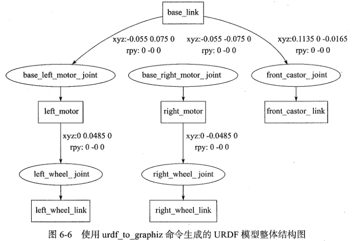

1.基础
1.介绍
x1.资源： (1)ROS wiki: http://wiki.ros.org (2)ROS answers: https://answers.ros.org (3)古月居: http://www.guyuehome.com (4)Exbot易科机器人实验室:http://blog.exbot.net (5)各种ROS博客、论坛、公众号、ROSCon等 (6)《ROS机器人开发实践》(预计2018年5月面市)
2.发展史： (1)2007年诞生于斯坦福STAIR项目，Morgan Quigley (2)2008 Willow Garage接收 (3)2010年发布ROS第一个版本 (4)2011年发布Turtle第一个版本 (5)2012年第一ROScon (6)2013年OSRF接管 (7)2014年ROS Indigo发布 (8)2016ROS Kinetic发布 (9)ROS 2.0Ardent发布 3.ROS的特点: (1)点对点设计： i.节点单元 ii.分布式网络 iii.RPC+TCP/UDP通信系统 iv.适合多机协同 (2)多语言支持: i.支持pyhton、C++、java等编程语言 ii.语言无关的接口定义 (3)架构精简、集成度高 i.每个功能节点可以单独编译 ii.集成众多开源项目 iii.接口统一、提高软件复用性 (4)组件化工具包丰富 i.3D化可视工具rviz ii.物理仿真环境gazebo iii.数据记录工具rosbag iv.Qt工具箱rqt_* (5)免费且开源 i.BSD许可，可修改、可复用、可商用 ii.软件包数量指数级增长，良好的生态系统
4.ROS总体设计--四位一体 ROS=通信机制+开发工具+应用功能+生态系统 5.ROS系统实现--三个层次 (1)计算图:描述程序是如何运行的（记录各个节点之间的消息连接） (2)文件系统:程序文件是如何组织和构建的 (3)开源社区:ROS资源是如何分布式管理的 6.计算图: (1)节点(Node)：软件模块 (2)节点管理器(ROS Master)：控制中心，提供参数管理 (3)话题(Topic)：异步通信机制，传输消息 (4)服务(Service)：同步通信机制，传输请求/应答数据 xxxxxxxxxx7.话题通信机制 (1)Talker注册 (2)Listener注册 (3)ROS Master进行信息匹配 (4)Listener发送连接请求 (5)Talker确认连接请求 (6)建立网络连接 (7)Talker向Listener发布数据 xxxxxxxxxx8.服务通信机制 (1)Talker注册 (2)Listener注册 (3)ROS Master进行信息匹配 (4)建立网络连接 (5)Talker向Listener发布服务应答数据 xxxxxxxxxx9.参数通信机制 (1)Talker设置变量 (2)Listener查询参数值 (3)ROS Master向Listener发送参数值 xxxxxxxxxx10.话题和服务的区别： 话题 服务同步性 异步 同步通信模型 发布/订阅 服务器/客户端底层协议 ROSTCP/ROSUDP ROSTCP/ROSUDP反馈机制 无 有缓冲区 有 无实时性 弱 强节点关系 多对多 一对多(一个server)适用场景 数据传输 逻辑处理2.注意：
1.linux
xxxxxxxxxx1.一般想要退出终端上一个命令的等待状态，可以用ctrl+C（不行就用ctrl+D）
2.入门
1.概念
xxxxxxxxxx1.文件系统: (1)功能包清单(Package manifest):记录功能包的基本信息，包含作者信息、许可信息、依赖选项、编译标志等 (2)元功能包(Meta Packages) :组织多个用于同一目的功能包 (3)元功能包清单(Meta Packages) :类似于功能包清单,不同之处在于元功能包清单中可能会包含运行时需要依赖的功能包或者声明一些引用的标签 (4)消息类型(Message):消息是ROS节点之间发布/订阅的通信信息,可以使用ROS系统提供的消息类型，也可以使用.msg文件在功能包的msg文件夹下自定义需要的消息类型 (5)服务类型(Service):服务类型定义了ROS服务器/客户端通信模型下的请求与应答数据类型，可以使用ROS系统提供的服务类型，也可以使用.srv文件在功能包的srv文件夹中进行定义 (6)代码(Code):放置功能包节点源代码的文件夹 xxxxxxxxxx2.开源社区 (1)发行版(Distribution) : ROS发行版包括一系列带有版本号、可以直接安装的功能包。 (2)软件源(Repository) : ROS依赖于共享网络上的开源代码,不同的组织机构可以开发或者共享自己的机器人软件。 (3)ROS wiki:记录ROS信息文档的主要论坛。 (4)邮件列表(Mailing list):交流ROS更新的主要渠道，同时也可以交流ROS开发的各种疑问。 (5)ROS Answers:咨询ROS相关问题的网站。约 (6)博客(Blog):发布ROS社区中的新闻、图片、视频(http://www.ros.org/news) xxxxxxxxxx7.版本选择ROS各版本必须要配合相匹配的操作系统，此教程使用ROS Kinetic Kame(2016.5.23)+ubuntu16.04
2.安装
xxxxxxxxxx1.先安装vmware虚拟机2.安装ubuntu16.043.安装ROS Kinetic Kame（wiki上的教程：https://wiki.ros.org/cn/kinetic/Installation/Ubuntu） (1)添加ROS软件源 sudo sh -c '. /etc/lsb-release && echo "deb http://mirrors.tuna.tsinghua.edu.cn/ros/ubuntu/ `lsb_release -cs` main" > /etc/apt/sources.list.d/ros-latest.list' (2)添加密钥 sudo apt-key adv --keyserver 'hkp://keyserver.ubuntu.com:80' --recv-key C1CF6E31E6BADE8868B172B4F42ED6FBAB17C654 (3)安装ROS sudo apt-get update sudo apt-get install ros-kinetic-desktop-full (4)初始化rosdep //报错不用管，直接下一步 sudo rosdep init rosdep update (5)设置环境变量 echo "source /opt/ros/kinetic/setup.bash" >>~/.bashrc source~/.bashrc (6)安装rosinstall sudo apt-get install python-rosinstall python-rosinstall-generator python-wstool build-essential //此方法为软件源方法安装，还有源码编译方式，比较复杂，这里不做介绍 //ros默然安装路径为:/opt/ros/3.ROS安装路径介绍
xxxxxxxxxxros默然安装路径为:/opt/ros/下面为版本文件夹:kinetic下面有5个文件夹+5个文件bin：一些可执行的命令程序etc：ros的一些配置文件（用得少）include：安装的功能包的头文件lib：安装的功能包的可执行程序(py、节点)share：安装的功能包的具体信息、话题、服务、action
4.开始
1.基础
xxxxxxxxxx1.启动ROS Master节点管理器ctrl+alt+T(打开终端)--->输入:roscore--->回车2.ROS常用命令命令 作用catkin_create_pkg 创建功能包rospack 获取功能包的信息catkin make 编译工作空间中的功能包rosdep 自动安装功能包依赖的其他包roscd 功能包目录跳转roscp 拷贝功能包中的文件rosed 编辑功能包中的文件rosrun 运行功能包中的可执行文件roslaunch 运行启动文件
2.第一个程序
xxxxxxxxxx1.小海龟仿真 (1)启动ROS Master: roscore (2)启动小海龟仿真器： rosrun turtlesim turtlesim_node (3)启动还给控制节点： rosrun turtlesim turtle_teletop_key //通过键盘键盘方向键控制，上下控制前进后退，左右控制转向2.rqt工具 终端输入：rqt_--->按2下tab键--->会出现所有rqt工具 终端输入:rqt_graph //可以启动计算图工具，查看正在运行的节点间的消息连接 //勾选上方Debug，只显示主要节点，忽略次要节点 输入:rqt_plot //参数曲线化工具，Topic填入话题名称(例如:turtle1_pose/x、turtle1_pose/y) 3.rosnode命令 输入rosnode，按2下tab键--->出现rosnode的相关命令 输入rosnode list //会列出当前正在运行的节点名字 输入rosnode info--->按2下tab键--->列出可以产看的节点 输入rosnode info /turtlesim //查看turtlesim节点的具体信息 /* Publication 发布的话题 Subscriptions 订阅的话题 Services 提供的服务 Pid 节点的id号 */4.rostopic命令 rostopic list //列出当前系统中发布/订阅的所有话题 rostopic info /turtle1/cmd_vel //查看 /turtle1/cmd_vel 话题的具体信息 rostopic echo /turtle/cmd_vel //监听 /turtle1/cmd_vel 话题发布的信息
rostopic pub /turtle/cmd_vel geometry_msgs/Twist "Linear: //给/turtle/cmd_vel节点发布1次话题，数据类型为 geometry_msgs/Twist，控制小海龟移动 x:2.0 y:0,0 z:0.0 angular: x:0.0 y:0.0 z:0.0" rostopic pub -r 10 /turtle/cmd_vel geometry_msgs/Twist "Linear: //给/turtle/cmd_vel节点发布话题，数据类型为 geometry_msgs/Twist，控制小海龟移动 x:2.0 //-r 10 指定发布频率为1秒10次 y:0,0 //ctrl+C，停止发布 z:0.0 angular: x:0.0 y:0.0 z:0.0" 5.rosservice命令 rosservice list //列出当前系统存在的服务 rosservice info /spawn //查看服务spawn的具体信息 /* Type，服务数据的类型 Args，具体数据 */ rosservice call 服务名 //用于发布一个服务请求 rosservice call /spawn "x: 5.0 //发布1个spawn服务，用于新生成一个小海龟，x、y为位置，theta为角度，name为小海龟的名字 y: 5.0 //很容易报参数格式报错，但这就是正确格式 theta: 0.0 name: 'turtle2'"
6.ROS应用框架 
3.工作空间
xxxxxxxxxx1.工作空间 工作空间(workspace)是一个存放工程开发相关文件的文件夹 src:代码空间(Source Space)：放置功能包源码 build:编译空间(Build Space)：编译过程中产生的中间文件 devel:开发空间(Development Space)：编译之后的可执行文件、环境变量的配置脚本 install:安装空间(Install Space):和devel文件夹功能基本一样，ROS2中合并成了一个文件夹 xxxxxxxxxx2.创建工作空间 (1)创建工作空间 mkdir -p ~/catkin_ws/src cd ~/catkin_ws/src catkin_init_workspace (2)编译工作空间 cd ~/catkin_ws/ catkin_make (3)设置环境变量 source devel/setup.bash //这句命令只在当前终端生效，可以vi ~/.bash，（或者进入用户目录，按下ctrl+h，就可以看到.bashrc就是，直接双击打开） //然后将source ~/catkin_ws/devel/setup.bash写在最后一行，保存，就新开终端依然有效 //工作空间名字不变的话，只需要操作一次 (4)检查环境变量 echo $ROS_PACKAGE_PATH
2.创建功能包 语法:catkin_create_pkg <package_name>[depend1] [depend2] [depend3] (1)创建功能包： cd ~/catkin_ws/src catkin_create_pkg learning_communication std_msgs rospy roscpp (2)编译功能包： cd ~/catkin_ws catkin_make source ~/catkin__ws/devel/setup.bash //同一个工作空间下，不允许存在同名功能包，不同工作空间下，允许存在同名功能包
3.工作空间的覆盖 不同工作空间存在同名的功能包，后建立的功能包会排在前面，被有限访问，旧的功能包就访问不到了 输入:env //查看系统的环境变量 输入:env | grep ros //查看和ros有关的环境变量 //ROS_PACKAGE记录的就是ros功能包的路径，多个路径用:隔开，从第一个路径依次查找（找不到，就会报错），每次添加的功能包的路径会放到最前端（左侧） 输入:rospackage find roscpp_tutorials //可以查看第一次找到roscpp_tutorials功能包的路径 4.话题
xxxxxxxxxx1.话题编程流程 (1)创建发布者 (2)创建订阅者 (3)添加编译选项 (4)运行可执行程序2.话题通信模型 xxxxxxxxxx3.实现发布者的步骤 (1)初始化ROS节点 (2)向ROS Master注册节点信息，包括发布的话题名和话题中的消息类型 (3)按照一定频率循环发布消息 4.发布者代码: 在catkin_ws/src/learning_communication/src/ 下新建文件talker.cpp
int main(int argc,char **argv){
//ROS节点初始化 ros::init(argc,argv,"talker");
//创建节点句柄 ros::NodeHandle n;
//创建一个Publisher(话题发布者)，发布名为chatter的topic(话题)，消息类型为std_msgs::String， //1000为发布话题的队列长度（来不及发就先放在队列里，超过1000，前面的消息就会被销毁，会少发） ros::Publisher chatter_pub =n.advertise<std_msgs::String>("chatter",1000);
//设置循环频率 ros::Rate loop_rate(10);
int count=0; while(ros::ok()){ //初始化std_msgs::String类型的消息 std_msgs::String msg; std::stringstream ss; ss<<"hellow world"<<count; //发布消息的内容为hellow world msg.data=ss.str();
//命令行提示，相当于printf ROS_INFO("%s",msg.data.c_str()); //发布消息 chatter_pub.publish(msg); //循环等待消息回调，发布者可以不写 ros::spinOnce();
//按照循环频率延时 loop_rate.sleep();
count++; }
return 0; }
4.实现订阅者的步骤 (1)初始化ROS节点 (2)订阅需要的话题 (3)循环等待话题消息，接收到消息后进入回调函数 (4)在回调函数中完成消息处理 5.订阅者代码: 在catkin_ws/src/learning_communication/src/ 下新建文件listener.cpp
//接收到订阅的消息后，会进入消息回调函数 void chatterCallback(const std_msgs::String::ConstPtr& msg){ ROS_INFO("I heard:[%s]",msg->data.c_str()); } //将接收到的消息打印出来 int main(int argc,char **argv){ //初始化ROS节点 ros::init(argc,argv,"listener"); //创建节点句柄 ros::NodeHandle n; //创建一个Subscriber(话题的订阅者)，订阅名为chatter的topic(话题)，注册回调函数chatterCallback ros::Subscriber sub=n.subscribe("chatter",1000,chatterCallback); //循环等待回调函数 ros::spin();
return 0;
}
6.编译代码 (1)设置需要编译的代码和生成的可执行文件 (2)设置链接库 (3)设置依赖 //CMakeLists.txt，足以是learning_communication功能包下的CMakeLists.txt，路径为:catkin_ws/src/learning_communication/CMakeLists.txt 加到###########下面 add_executable(talker src/talker.cpp) /*根据src/talker.cpp生成talker可执行文件， 如果生成talker需要多个文件，则src/talker.cpp src/t2.cpp src/t3.cpp */ target_link_libraries(talker ${catkin_LIBRARIES}) //连接第三方库，这里没有使用第三方库，链接默认的库 //add_dependencies(talker ${PROJECT_NAME}_generate_messages_cpp 添加功能包依赖，这里用不到
add_executable(listener src/listener.cpp) target_link_libraries(listener ${catkin_LIBRARIES}) //add_dependencies(talker ${PROJECT_NAME}_generate_messages_cpp (4)编译 在工作空间目录下(catkin_ws)下使用命令:catkin_make //如果编译100%，没有报错，就是编译成功 //有报错，就根据提示，逐步排查，然后再次编译，直到成功 //打开catkin_ws/devel/lib/learning_communication，里面就是编译后的可执行程序
7.运行程序 输入：rosrun learning_communication talker //rosrun是运行节点的命令，learning_communication是包名，talker是节点(编译后的可执行程序) rosrun learning_communication listener //注意:运行时要先使用roscore启动ROS Master，然后启动两个节点，需要分别在3个终端启动节点5.自定义消息结构
xxxxxxxxxx1.定义msg文件 //在learning_communication功能包下新建msg文件夹，在msg文件夹下新建话题消息定义文件Person.msg，内容为： string name uint8 sex uint8 age uint8 unknown=0 uint8 male=1 uint8 female=22.添加功能包依赖 //在learning_communication功能包下的package.xml(用gedit打开)的最后写入以下内容 <build_depend>message_generation</build_depend> <exec_depend>message_runtime</exec_depend> //在某些版本的ROS中exec_depend标签需要改成run_depend 3.添加编译选项 //在learning_communication功能包下的CMakeList.txt添加以下内容 find_package(...... message_generation) //在## Declare ROS messages, services and actions ## 上面 catkin_package(CATKIN_DEPENDS roscpp rospy std_msgs message_runtime) //在 ## Build ## 上面 add_message_files(FILES Person.msg) //在 ## Declare ROS dynamic reconfigure parameters ## 上面 generate_messages(DEPENDENCIES std_msgs) 4.编译 进入catkin_ws，输入:catkin_make，编译程序
5.查看自定义的消息 输入:rosmsg show Person //查看自定义的消息 6.服务
xxxxxxxxxx1.服务编程流程 (1)创建服务器 (2)创建客户端 (3)添加编译选项 (4)运行可执行程序 
xxxxxxxxxx2.定义srv文件 //在learning_communication下新建srv文件夹，在srv文件夹下新建AddTwoInts.srv，内容为 int64 a int64 b --- int64 sum //---用于分割数据，上面是服务的请求数据，下面是服务的应答数据
3.在package.xml中添加功能包依赖 <build_depend>message _generation</build_depend> <exec_depend>message_runtime</exec_depend> //和前面msg的一样，添加过了，这里就不用添加了 4.在CMakeLists.txt中添加编译选项 find_package(...... message_generation) catkin_package(CATKIN_DEPENDS roscpp rospy std_msgs message_runtime) add_service_files(FILES AddTwolnts.srv) //告诉系统使用哪一个文件用于服务消息，添加在 ## Declare ROS dynamic reconfigure parameters ## 上面 //如果接着地5做这个，则必须把add_service_files(FILES AddTwoInts.srv)写在generate_messages(DEPENDENCIES std_msgs)前面，否则会报错 5.编译 catkin_ws下的终端输入:catkin_make //可以写完代码再编译，但建议没完成一部分编译一次，否则不容易排除错误 6.实现服务器 (1)初始化ROS节点 (2)创建Server实例 (3)循环等待服务请求，进入回调函数 (4)在回调函数中完成服务功能的处理，并反馈应答数据 7.服务器代码 //在learning_communication/src文件夹下新建server.cpp，内容如下
//service回调函数，输入参数req，输出参数res bool add(learning_communication::AddTwoInts::Request &req,learning_communication::AddTwoInts::Response &res){ //将输入参数中的请求数据相加，结果放在应答变量中 res.sum=req.a+req.b; ROS_INFO("request:x=%ld,y=%1d",(long int)req.a,(long int)req.b); ROS_INFO("sending back response:[%1d]",(long int)res.sum); return true; }
int main(int argc,char **argv){ //ROS节点初始化 ros::init(argc,argv,"add_two_ints_server"); //创建节点句柄 ros::NodeHandle n; //创建一个名为add_two_ints的server，注册回调函数add() ros::ServiceServer service=n.advertiseService("add_two_ints",add); //输出提示 ROS_INFO("Ready to add two ints."); //循环的等待回调函数 ros::spin();
return 0;
}
8.实现客户端 (1)初始化ROS节点 (2)创建一个Client实例 (3)发布服务请求数据 (4)等待Server处理之后的应答结果
9.客户端代码 //在learning_communication/src文件夹下新建server.cpp，内容如下
int main(int argc, char **argv) { //ROS节点初始化 ros::init(argc, argv, "add_two_ints_client"); //从终端命令行获取两个加数 if (argc != 3) { ROS_INFO("usage: add_two_ints_client X Y"); return 1; } //创建节点句柄 ros::NodeHandle n; //创建一个client，请求add_two_service，service消息类型是learning_communication::AddTwoInts ros::ServiceClient client = n.serviceClient<learning_communication::AddTwoInts>("add_two_ints"); //创建learning_communication::AddTwoInts类型的service消息 learning_communication::AddTwoInts srv; srv.request.a = atoll(argv[1]); // 使用argv[1] 和 argv[2] 获取参数值 srv.request.b = atoll(argv[2]); //发布service请求，等待加法运算的应答结果 if (client.call(srv)) { ROS_INFO("Sum: %ld", (long int)srv.response.sum); } else { ROS_INFO("Failed to call service add_two_ints"); return 1; } return 0; }10.编译 (1)设置需要编译的代码和生成的可执行文件 (2)设置链接库 (3)设置依赖 //在learning_communication/CMakeLists.txt add_executable(server src/server.cpp) target_link_libraries(server ${catkin_LIBRARIES}) add_dependencies(server ${PROJECT_NAME}_gencpp) add_executable(client src/client.cpp) target_link_libraries(client ${catkin_LIBRARIES}) add_dependencies(client ${PROJECT_NAME}_gencpp)
11.运行 启动ROS Master：roscore 输入：rosrun learning_communication server 输入：rosrun learning_communication client 3 5 7.动作编程
xxxxxxxxxx1.动作 —种问答通信机制 带有连续反馈 可以在任务过程中止运行 基于ROS的消息机制实现 2.Action接口 goal:发布任务目标;cancel:请求取消任务 status:通知客户端当前的状态 feedback:周期反馈任务运行的监控数据 result:向客户端发送任务的执行结果，只发布一次 xxxxxxxxxx3.定义动作消息 //在learning_communication下新建action文件夹，里面新建DoDishes.action文件 uint32 dishwasher_id --- uint32 total_dishes_cleaned --- float32 percent_complete 4.在package.xml中太你家功能包依赖 <build_depend>actionlib</build_depend> <build_depend>actionlib_msgs</build_depend> <exec_depend>actionlib</exec_depend> <exec_depend>actionlib_msgs</exec_depend> 5.在CMakeLists.txt添加编译选项 find_package(catkin REQUIRED actionlib_msgs actionlib) add_action_files(DIRECTORY action FILES DoDishes.action) generate_messages(DEPENDENCIES actionlib_msgs) //如果是接着前面服务写代码，会产生冲突，需要合成一句 // generate_messages(DEPENDENCIES std_msgs actionlib_msgs) 6.编译 catkin_make 7.实现服务端 (1)初始化ROS节点 (2)创建动作服务器实例 (3)启动服务器，等待动作请求 (4)在回调函数中完成动作服务功能的处理，并反馈进度信息 (5)动作完成，发送结束信息
8.服务端代码： //在learning_communication/src/下新建DoDishes_server.cpp
typedef actionlib::SimpleActionServer<learning_communication::DoDishesAction> Server; //收到action的goal后调用该回调函数 void execute(const learning_communication::DoDishesGoalConstPtr& goal,Server* as){ ros::Rate r(1); learning_communication::DoDishesFeedback feedback; ROS_INFO("Dishwasher %d is working",goal->dishwasher_id);
//假设洗盘子的进度，并且按照1hz的频率发布进度feedback for(int i=1;i<=10;i++){ feedback.percent_complete=i*10; as->publishFeedback(feedback); r.sleep(); } //当acion完成后，向客户端返回结果 ROS_INFO("Dishwasher %d finish working",goal->dishwasher_id); as->setSucceeded();
}
int main(int argc,char** argv){ ros::init(argc,argv,"do_dishes_server"); ros::NodeHandle n; //定义一个服务器 Server server(n,"do_dishes",boost::bind(&execute,_1,&server),false); //服务器开始运行 server.start(); ros::spin(); return 0; }
9.实现客户端 (1)初始化ROS节点 (2)创建动作客户端实例 (3)涟接动作服务端 (4)发送动作目标 (5)根据不同类型的服务端反馈处理回调函数
10.客户端代码： //在learning_communication/src/下新建DoDishes_client.cpp
typedef actionlib::SimpleActionClient<learning_communication::DoDishesAction> Client; //当action激活后会调用该回调函数一次 void doneCb(const actionlib::SimpleClientGoalState& state,const learning_communication::DoDishesResultConstPtr& result){ ROS_INFO("YAy! The dishes are now clean"); ros::shutdown(); }
//收到feedback后调用该回调函数 void activeCb(){ ROS_INFO("Goal just went active"); }
void feedbackCb(const learning_communication::DoDishesFeedbackConstPtr& feedback){ ROS_INFO("parent_complete:%f",feedback->percent_complete); }
int main(int argc,char** argv){ ros::init(argc,argv,"do_dishes_client"); //定义一个客户端 Client client("do_dishes",true);
//等待服务端 ROS_INFO("Waiting for action server to start"); client.waitForServer(); ROS_INFO("Action serevr started,sending goal"); //创建一个action的goal learning_communication::DoDishesGoal goal; goal.dishwasher_id=1;
//发送action的goal给服务器端，并且设置回调函数 client.sendGoal(goal,&doneCb,&activeCb,&feedbackCb); ros::spin(); return 0; }
11.编译 (1)设置需要编译的代码和生成的可执行文件 (2)设置链接库 (3)设置依赖 //learning_communication/CMakeLists.txt add_executable(DoDishes_client src/DoDishes_client.cpp) target_link_libraries( DoDishes_client ${catkin_LIBRARIES}) add_dependencies(DoDishes_client ${${PROJECT_NAME}_EXPORTED_TARGETS}) add_executable(DoDishes_server src/DoDishes_server.cpp) target_link_libraries( DoDishes_server ${catkin_LIBRARIES}) add_dependencies(DoDishes_server ${${PROJECT_NAME}_EXPORTED_TARGETS}) 5.分布式通信
1.介绍
xxxxxxxxxxROS是一种分布式软件框架，节点之间通过松耦合的方式进行组合
1.如何实现分布式多机通信 (1)设置IP地址，确保底层链路的联通 //两台计算机分别使用ping命令测试网络是否联通 (2)在从机端设置ROS_MASTER_URI，让从机找到ROS Master //整个分布式系统只能有一个ROS Master $export ROS_MASTER_URI=http://hcx-pc:11311 //（当前终端有效），或 $ echo “export ROS_MASTER_URI=http://hcx-pc:11311”>>~/.bzshrc //(所有终端有效)
2.案例
xxxxxxxxxx主机端启动ROS Master与海龟仿真节点：roscorerosrun turtlesim turtlesim_node从机端发布一个速度控制消息：rostopic pub-r 10/turtle1/cmd_velgeometry_msgs/Twist "linear:x: 0.5y: 0.0z:0.0angular:x: 0.0y: 0.0z:0.5"
6.关键组件
1.Launch文件
xxxxxxxxxx1.介绍： Launch文件:通过XML文件实现多节点的配置和启动(可自动启动ROS Master) <!--注意：launch文件比较自由，可以放到任何地方，直接在launch文件目录下，roslaunch filename.launch就行--> <launch> <!-- local machine already has a definition by default. This tag overrides the default definition with specific ROS_ROOT and ROS_PACKAGE_PATH values —-> machine name ="local_alt" address=localhost"default="true”ro3-root= /u/user/ros/zros/ ros-package-path / u/usex/2os/ros-pkg”/> <!-- a basic listener node --> <node name="listener-1" pkg="rospy_tutorials" type="listener"/><!-- pass args to the listener node --> <node name=listener-2" pkg="rospy_tutorials" type="listener" arg3="-foo arg2" /><!-- a respawn-able listener node --> <node name="listener-3 " pkg="rospy_tutorials" type="listener" respawn="true"/><!-- start listener node in the 'wg1' namespace --> <node n5="wg1" name=1istener-wg1" pkg="rospy_tutorials" type="listener" respawn="true"/> <!-- start a group of nodes in the 'wg2' namespace --> <group ns="wg2 "> <!-- remap applies to all future statements in this scope.--><remap from="chatter" to="hello"/ > <node pkg='rospy_tutorials" type="listener" name="listener args="1--test" resp awn="true"/> <node pkg=rospy_tutorials" type="talker" name="talker"> <!-- set a private parameter for the node --> <param name="talker_1_param" value="a value"/><!-- nodes can have their own remap args--><remap from="chatter" to="hello-1"/> <!-- you can set environment variables for a node --><env name="ENV_EXAMPLE" value=" some value"/> </ node> </ group> </launch> 2.标签 <launch> <node pkg="turtlesim" name="sim1" type="turtlesim node" /> <node pkg="turtlesim" name="sim2" type="turtlesim node" /> </launch> 说明： <launch> launch文件中的根元素采用<launch>标签定义
<node pkg="package-name" type="executable-name" name="node-name" /> 启动节点 pkg:节点所在的功能包名称 type:节点的可执行文件名称 name:节点运行时的名称 output、respawn、required、ns、args
参数设置：<param name="output_frame" value="odom"/> 设置ROS系统运行中的参数,存储在参数服务器中 name:参数名 value:参数值 加载参数文件中的多个参数: <rosparam file="params.yaml" command="load" ns=“params" />
参数设置：<arg name="arg-name" default="arg-value" /> launch文件内部的局部变量，仅限于launch文件使用 name:参数名 value:参数值 调用: <param name="foo" value="$(arg arg-name)"/> <node name="node" pkg="package" type="type " args="$(arg arg-name)"/>
重映射：<remap from="/turtlebot/cmd_vel" to="/cmd_vel" /> 重映射ROS计算图资源的命名 from:原命名 to:映射之后的命名
嵌套：<include file="$(dirname)/other.launch" /> 包含其他launch文件，类似C语言中的头文件包含 file:包含的其他launch文件路径 2.TF坐标变换
xxxxxxxxxx参考《机器人学导论》
1.介绍 (1)功能 五秒钟之前，机器人头部坐标系相对于全局坐标系的关系是什么样的? //默认TF能保存10秒之内所有的坐标变换的关系 机器人夹取的物体相对于机器人中心坐标系的位置在哪里? 机器人中心坐标系相对于全局坐标系的位置在哪里? (2)实现方法 广播TF变换 口斤TF变换 //所有TF变换是以一个树形结构来保存的 //通过树来获取某连个坐标系之间的变换关系，所以需要把整个树的数据缓存下来 2.小海龟坐标变换案例 sudo apt-get install ros-kinetic-turtle-tf //安装过了，就可以不安装了 roslaunch turtle_tf turtle_tf_demo.launch rosrun turtlesim turtle_teleop_key 命令:rosrun tf view_frames //该命令可以把当前TF变换关系图保存为一个pdf文件:frames.pdf，放置在命令运行的根目录下 xxxxxxxxxx 命令:rosrun tf tf_echo turtle1 turtle2 //可以查看两只海龟TF坐标变换的关系，ctrl+C退出
3.代码实现两个海龟的案例---实现一个TF广播器 (1)定义TF广播器 (2)创建坐标变换值 (3)发布坐标变换 //此处新建了一个功能包learning_tf，learning_tf/src/下新建turtle_tf_broadcaster.cpp
std::string turtle_name; void poseCallback(const turtlesim::PoseConstPtr& msg){
//tf广播器 static tf::TransformBroadcaster br;
//根据乌龟当前的位姿,设置相对于世界坐标系的坐标变换 tf::Transform transform; transform.setOrigin(tf::Vector3(msg->x,msg->y,0.0)); tf::Quaternion q; q.setRPY(0,0,msg->theta); transform.setRotation(q);
//发布坐标变换 br.sendTransform(tf::StampedTransform(transform,ros::Time::now(),"world", turtle_name)); } int main(int argc,char** argv) { //初始化节点 ros::init(argc,argv,"my_tf_broadcaster"); if (argc != 2){ ROS_ERROR("need turtle name as argument" ); return -1; } turtle_name = argv[1]; //订阅乌龟的pose信息 ros::NodeHandle node; ros::Subscriber sub = node.subscribe(turtle_name+"/pose",10,&poseCallback); ros::spin(); return 0; } 4.实现一个TF监听器 (1)定义TF监听器 (2)查找坐标变换 //在learning_tf/src/下新建turtle_tf_listener.cpp
int main(int argc,char** argv){ //初始化节点 ros::init(argc, argv,"my_tf_listener" ); ros::NodeHandle node; //通过服务调用,产生第二只乌龟turtle2 ros::service::waitForService("spawn"); ros::ServiceClient add_turtle =node.serviceClient<turtlesim::Spawn>("spawn"); turtlesim::Spawn srv; add_turtle.call(srv); //定义turtle2的速度控制发布器 ros::Publisher turtle_vel =node.advertise<geometry_msgs::Twist>("turtle2/cmd_vel",10); //tf监听器 tf::TransformListener listener; ros::Rate rate( 10.0); while (node.ok()) { tf::StampedTransform transform; try { //查找turtle2与turtle1的坐标变换 listener.waitForTransform("/turtle2","/turtle1",ros::Time(0),ros::Duration(3.0)); listener.lookupTransform("/turtle2" , "/turtle1", ros::Time(0), transform); } catch (tf::TransformException &ex){ ROS_ERROR("%s",ex.what()); ros::Duration(1.0).sleep(); continue;
}
geometry_msgs::Twist vel_msg; vel_msg.angular.z = 4.0 * atan2(transform.getOrigin().y(),transform.getOrigin().x()); vel_msg.linear.x = 0.5 * sqrt(pow(transform.getOrigin().x(), 2)+pow(transform.getOrigin().y(), 2)); turtle_vel.publish(vel_msg);
rate.sleep(); } return 0; };
5.编译 find_package(catkin REQUIRED COMPONENTS ... tf ) add_executable(turtle_tf_broadcaster src/turtle_tf_broadcaster.cpp) target_link_libraries(turtle_tf_broadcaster ${catkin_LIBRARIES}) add_executable(turtle_tf_listener src/turtle_tf_listener.cpp) target_link_libraries(turtle_tf_listener ${catkin_LIBRARIES}) //注意：该项目需要tf库，需要提前安装，（完整版的ros一般已经安装上了） 6.launch文件启动例程 //一般在learning_tf下新建launch文件夹，launch文件夹下新建start_demo_with_listener.launch文件，内容为 //实际可以放在任意位置，但是为了执行命令方便 <launch> <!--海龟仿真器--> <node pkg="turtlesim" type="turtlesim_node" name="sim"/> <!--键盘控制--> <node pkg="turtlesim" type="turtle_teleop_key" name="teleop" output="screen"/> <!--两只海龟的tf广播--> <node pkg="learning_tf" type="turtle_tf_broadcaster" args="/turtle1" name="turtle1_tf_broadcaster"/> <node pkg="learning_tf" type="turtle_tf_broadcaster" args="/turtle2" name="turtle2_tf_broadcaster"/> <!--监听tf广播,并且控制turtle2移动--> <node pkg="learning_tf" type="turtle_tf_listener" name="listener"/> </launch>
9.启动例程 命令：roslaunch learning_tf start_demo_with_listener.launch 3.可视化工具
xxxxxxxxxx1.日志输出工具rqt_console 命令：rqt_console 2.计算图的可视化工具rqt_graph 命令：rqt_graph
3.数据绘图工具rqt_plot 命令：rqt_plot 4.参数动态配置工具rqt_reconfigure 命令：rosrun rqt_reconfigure rqt_reconfigure 4.Rviz可视化平台
xxxxxxxxxx1.介绍： Rviz是一款三维可视化工具，可以很好的兼容基于ROS软件框架的机器人平台 i.在rviz中，可以使用可扩展标记语言XML对机器人、周围物体等任何实物进行尺寸、质量、位置、材质、关节等属性的描述，并且在界面中呈现出来 ii.同时，rviz还可以通过图形化的方式，实时显示机器人传感器的信息、机器人的运动状态、周围环境的变化等信息 iii.总而言之，rviz通过机器人模型参数、机器人发布的可监测信息的图形化显示 用户和开发者也可以在rviz的控制界面下，通过按钮、滑动条、数值等方式，控制机器人的行为 2.启动 命令：rosrun rviz rviz 3.使用 点击左下角Add按钮--->选择PointCloud2--->在左侧列表中找到PointCloud2 5.Gazebo物理仿真环境
xxxxxxxxxx1.介绍： (1)Gazebo是一款功能强大的三维物理仿真平台 具备强大的物理引擎 高质量的图形渲染 方便的编程与图形接口 开源免费 (2)其典型应用场景包括 测试机器人算法 机器人的设计 现实情景下的回溯测试 2.运行 命令：roslaunch gazebo_ros empty_world.launch 7.机器人系统设计
1.机器人
xxxxxxxxxx1.定义： //国际标准化组织(ISO) i.机器人的动作机构具有类似于人或其他生物体的某些器官(肢体、感受等）的功能 ii.机器人具有通用性，工作种类多样，动作程序灵活易变 iii.机器人具有不同程度的智能性，如记忆、感知、推理、决策、学习等 iv.机器人具有独立性，完整的机器人系统在工作中可以不依赖于人的干预
2.组成 xxxxxxxxxx执行机构:人体的手和脚，直接面向工作对象的机械装置驱动系统:人体的肌肉和筋络，负责驱动执行机构，将控制系统下达的命令转换成执行机构需要的信号传感系统:人体的感官和神经，主要完成信号的输入和反馈，包括内部传感系统和外部传感系统控制系统:人体的大脑，实现任务及信息的处理，输出控制命令信号
2.机器人的实现
xxxxxxxxxx1.驱动系统的实现 (1)电源子系统 12V/5V/3V 电源保护、滤波 (2)电机驱动子系统 电机驱动:控制信号→电信号 电机控制:闭环驱动 (3)传感器接口 超声波 里程计
2.控制系统的实现 xxxxxxxxxx3.连接摄像头案例 sudo apt-get install ros-kinetic-usb-cam roslaunch usb_cam usb_cam-test.launch rqt_image_view 
xxxxxxxxxx4.连接Kinect案例 sudo apt-get install ros-kinetic-freenect-* git clone https://github.com/avin2/SensorKinect.git cd SensorKinect/Bin tar xvf SensorKinect093-Bin-Linux-x86-v5.1.2.1.tar.bz2 sudo ./install.shxxxxxxxxxx4.链接激光雷达 sudo apt-get install ros-kinetic-rplidar-ros rosrun rplidar_ros rplidarNode //串口权限问题 sudo gpasswd --add USER_NAME dialout //echo /scan 打印激光雷达的数据 3.UPDF机器人模型
xxxxxxxxxx1.介绍 i.URDF是ROS中机器人模型的描述格式，包含对机器人刚体外观、物理属性、关节类型等方面的描述 ii.使用xacro优化模型后，可以为复杂模型添加更多可编程的功能。 iii.机器人模型中还可以添加<gazebo>标签，实现传感器、传动机构等环节的仿真功能 iv.使用rviz+ArbotiX搭建简单的仿真环境，可以实现机器人运动控制等功能的仿真 v.配合ros_control中的控制功能，可以在Gazebo物理仿真环境中创建-一个逼真的世界，不仅可以控制机器人运动时的物理状态，还可以获得带有噪声的传感器参数
2.UPDF URDF (Unified Robot Description Format，统一机器人描述格式)是ROS中一个非常重要的机器人模型描述格式， ROS同时也提供URDF 文件的C++解析器，可以解析URDF文件中使用XML格式描述的机器人模型 3.例子： <robot name="mrobot chassis"><link name="base_link"><visual><origin xyz=" o o o" rpy="o o 0"/><geometry><cylinder length="0.005" radius="0.13"/></ geometry><material name="yellow"><color rgba="1 0.4 0 1"/></material></visual></ link><joint name="base_left_motor_joint" type="fixed"><origin xyz="-o.055 0.075 o" rpy="0 o o" /><parent link=base_link" / ><child link="1eft motor”[></joint> <link name="left_motor"> <visual> <origin xyz="o o o"rpy="1.5707 o o" /><geometry> <cylinder radius="0.02" length = "0.08" /></ geometry> <material name="gray"> <color rgba="0.75 0.75 0.75 1"/> </material> </visual> </link>
<joint name="left wheel_ joint" type="continuous"><origin xyz="0 0.0485 0" rpy="0 0 0" /><parent link="left_motor" /><child link="left wheel_ link" / ><axis xyz="0 1 o"/></joint>
4.<link> 描述机器人某个刚体部分的外观和物理属性：尺寸、颜色，形状，惯性矩阵,碰撞参数等 <visual>:描述机器人link部分的外观参数 <inertial>︰描述link的惯性参数 <collision>︰描述link的碰撞属性 例子： <link name="<link name>"> <inertial> . . . . . . </inertial> <visual> . . . . . . </visual> <collision> . . . . . . </collision> </link> xxxxxxxxxx5.<joint> 描述机器人关节的运动学和动力学属性 包括关节运动的位置和速度限制 根据关节运动形式，可以将其分为六种类型 关节类型 描述 continuous 旋转关节，可以围绕单轴无限旋转 revolute 旋转关节，类似于continuous，但是有旋转的角度极限 prismatic 滑动关节，沿某一轴线移动的关节，带有位置极限 planar 平面关节，允许在平面正交方向上平移或者旋转 floating 浮动关节，允许进行平移、旋转运动 fixed 固定关节，不允许运动的特殊关节 子标签： <calibration>:关节的参考位置，用来校准关节的绝对位置 <dynamics>:描述关节的物理属性，例如阻尼值、物理静摩擦力等，经常在动力学仿真中用到 <limit>:描述运动的一些极限值，包括关节运动的上下限位置、速度限制、力矩限制等 <mimic>:描述该关节与已有关节的关系 <safety_controller>:描述安全控制器参数
例子： <joint name=<name of the joint>" type = "<joint type>"> <parent link="parent link" / > <child link="child link" /> <calibration ....T> <dynamics damping ..../> <limit effort .... /> .... </joint> xxxxxxxxxx6.<robot> 完整机器人模型的最顶层标签 <link>和<joint>标签都必须包含在<robot>标签内 一个完整的机器人模型，由一系列<link>和<joint>组成 例子： <robot name="<name of the robot>"> <link> .. ..... </link> <link> ..... . . </link> <joint> ....... </joint> <joint> ..... .. </joint> </robot> xxxxxxxxxx7.<gazebo> 用于描述机器人模型在Gazebo中仿真所需要的参数，包括机器人材料的属性、Gazebo插件等 该标签不是机器人模型必需的部分，只有在Gazebo仿真时才需加人
<gazebo reference="link .1"> <material>Gazebo/Black</material> <lgazebo>
4.机器人模型例子
xxxxxxxxxx//在ROS中，机器人的模型一般放在RobotName_description功能包下下面1.创建一个机器人功能包 catkin_create_pkg mrobot_description urdf xacro
2.在功能包下手动新建文件夹： urdf:存放机器人模型的URDF或xacro文件 meshes:放置URDF中引用的模型渲染文件 launch:保存相关启动文件 config:保存rviz的配置文件 xxxxxxxxxx
xxxxxxxxxx
3.机器人模型 这个机器人底盘模型有7个link、6个joint 7个link包括1个机器人底板、2个电机、2个驱动轮和2个万向轮 6个joint负责将驱动轮、万向轮、电机安装到底板上，并设置相应的连接方式 //在mrobot_description/urdf/，下新建文件mrobot_chassis.urdf，内容为 xxxxxxxxxx <robot name="mrobot_chassis">
<link name="base_link"> <visual> <origin xyz="0 0 0" rpy="0 0 0"/> <geometry> <cylinder length="0.005" radius="0.13"/> </geometry> <material name="yellow"> <color rgba= "1 0.4 0 1"/> </material> </visual> </link>
<joint name="base_left_motor_joint" type="fixed"> <origin xyz="-0.055 0.075 0" rpy="0 0 0"/> <parent link="base_link"/> <child link="left_motor"/> </joint>
<link name="left_motor"> <visual> <origin xyz="0 0 0" rpy="1.5707 0 0"/> <geometry> <cylinder radius="0.02" length="0.08"/> </geometry> <material name="gray"> <color rgba="0.75 0.75 0.75 1"/> </material> </visual> </link>
<joint name="left_wheel_joint" type="continuous"> <origin xyz="0 0.0485 0" rpy=" 0 0 0"/> <parent link= "left_motor"/> <child link="left_wheel_link"/> <axis xyz="0 1 0"/> </joint>
<link name="left_wheel_link"> <visual> <origin xyz="0 0 0" rpy="1.5707 0 0"/> <geometry> <cylinder radius="0.033" length="0.017"/> </geometry> <material name="white"> <color rgba="1 1 1 0.9"/> </material> </visual> </link>
<joint name="base_right_motor_joint" type="fixed"> <origin xyz="-0.055 -0.075 0" rpy="0 0 0"/> <parent link="base_link"/> <child link="right_motor"/> </joint>
<link name="right_motor"> <visual> <origin xyz="0 0 0" rpy="1.5707 0 0"/> <geometry> <cylinder radius="0.02" length="0.08"/> </geometry> <material name="gray"> <color rgba="0.75 0.75 0.75 1"/> </material> </visual> </link>
<joint name="right_wheel_joint" type="continuous"> <origin xyz= "0 -0.0485 0" rpy="0 0 0"/> <parent link="right_motor"/> <child link="right_wheel_link"/> <axis xyz="0 1 0"/> </joint>
<link name="right_wheel_link"> <visual> <origin xyz="0 0 0" rpy="1.5707 0 0"/> <geometry> <cylinder radius="0.033" length ="0.017"/> </geometry> <material name="white"> <color rgba="1 1 1 0.9"/> </material> </visual> </link>
<joint name="front_castor_joint" type="fixed"> <origin xyz="0.1135 0 -0.0165" rpy="0 0 0"/> <parent link="base_link"/> <child link="front_castor_link"/> <axis xyz="0 1 0"/> </joint>
<link name="front_castor_link"> <visual> <origin xyz="0 0 0" rpy="1.5707 0 0"/> <geometry> <sphere radius="0.0165"/> </geometry> <material name="black"> <color rgba="0 0 0 0.95"/> </material> </visual> </link></robot>xxxxxxxxxx4.URDF工具 //URDF提供了一些命令行工具，可以帮助我们检查、梳理模型文件，需要在终端中独立安装: (1)安装 sudo apt-get install liburdfdom-tools (2)检查 i.使用check_urdf命令对mrobot_chassis.urdf文件进行检查 check_urdf mrobot_chassis.urdf //该命令需要在该文件目录下使用，否则报错找不到文件 //check_urdf命令会解析URDF文件，并且显示解析过程中发现的错误，如果一切正常，会出现:-------Successfuly Parsed XML------- ii.还可以使用urdf_to_graphiz命令查看URDF模型的整体结构 urdf_to_graphiz mrobot_chassis.urdf //该命令需要在该文件目录下使用，否则报错找不到文件 //执行urdf_to_graphiz命令后，会在当前目录下生成一个pdf文件，打开该文件，可以看到模型的整体结构图 
xxxxxxxxxx5.URDF文件解析(1) <?xml version="1.0" ?> <robot name="mrobot_chassis"> 首先需要声明该文件使用XML描述，然后使用<robot>根标签定义一个机器人模型，并定义该机器人模型的名称是“mrobot_chassis” 根标签内的内容即为对机器人模型的详细定义
(2) <link name="base_link"> <visual> <origin xyz="0 0 0" rpy="0 0 0"/> <geometry> <cylinder length="0.005" radius="0.13"/> </geometry> <material name="yellow"> <color rgba= "1 0.4 0 1"/> </material> </visual> </link> 这一段代码用来描述机器人的底盘link，<visual>标签用来定义底盘的外观属性，在显示和仿真中，rviz或Gazebo会按照这里的描述将机器人模型呈现出来， 我们将机器人底盘抽象成一个圆柱结构，使用<cylinder>标签定义这个圆柱的半径和高;然后声明这个底盘圆柱在空间内的三维坐标位置和旋转姿态， 底盘中心位于界面的中心点，所以使用<origin>设置起点坐标为界面的中心坐标，此外，使用<material>标签设置机器人底盘的颜色—---黄色，其中的<color>便是黄色的RGBA值 (3) <joint name="base_left_motor_joint" type="fixed"> <origin xyz="-0.055 0.075 0" rpy="0 0 0"/> <parent link="base_link"/> <child link="left_motor"/> </joint> 这一段代码定义了第一个关节joint，用来连接机器人底盘和左边驱动电机，joint 的类型是fixed类型，这种类型的joint是固定的，不允许关节发生运动， <origin>标签定义了joint的起点，我们将起点设置在需要安装电机的底盘位置 (4) <link name="left_motor"> <visual> <origin xyz="0 0 0" rpy="1.5707 0 0"/> <geometry> <cylinder radius="0.02" length="0.08"/> </geometry> <material name="gray"> <color rgba="0.75 0.75 0.75 1"/> </material> </visual> </link>
上面这一段代码描述了左侧电机的模型。电机的外形抽象成圆柱体，圆柱体的半径为0.02m，高为0.08m。下边的描述和机器人底盘的类似，定义了电机中心的起点位置和外观颜色 /* 之前定义了一个 joint将电机连接到底盘上，电机的坐标位置是相对于joint计算的。在joint的位置坐标设置中， 我们已经将joint 放置到了安装电机的底盘位置，所以在电机模型的坐标设置中，不需要位置偏移，放置到（0，0，0）坐标即可， 由于圆柱体默认是垂直地面创建的，需要把圆柱体围绕x轴旋转90°(使用弧度表示大约为0.75)，才能成为电机的模样 */ (5) <joint name="left_wheel_joint" type="continuous"> <origin xyz="0 0.0485 0" rpy=" 0 0 0"/> <parent link= "left_motor"/> <child link="left_wheel_link"/> <axis xyz="0 1 0"/> </joint> 接着需要定义电机和轮子之间的joint。joint的类型是continuous 型，这种类型的joint可以围绕一个轴进行旋转，很适合轮子这种模型， <origin>标签定义了joint的起点，将起点设置到安装轮子的位置，即电机的一端，<axis>标签定义该joint 的旋转轴是正y轴，轮子在运动时就会围绕y轴旋转 /* 机器人底盘模型的其他部分都采用类似的方式在后续代码中描述，这里不再赘述，建议你一定要动手从无到有尝试写一个机器人的URDF 文件， 在实践中才能更加深刻理解URDF中坐标、旋转轴、关节类型等关键参数的意义和设置方法 */ 6.在rviz中显示模型 完成URDF模型的设计后，可以使用rviz将该模型可视化显示出来，检查是否符合设计目标 //在mrobot_description/launch/文件夹下新建文件display_mrobot_chassis_urdf.launch，内容如 xxxxxxxxxx<launch> <param name="robot_description" textfile="$(find mrobot_description)/urdf/mrobot_chassis.urdf"/> <!--设置GUI参数，显示关节控制播件--> <param name="use_gui" value="true"/> <!--运行joint_state_publisher节点，发布机器人的关节状态--> <node name="joint_state_publisher" pkg="joint_state_publisher" type="joint_state_publisher"/> <!--运行robot state publisher节点，发布tf--> <node name="robot_state_publisher" pkg="robot_state_publisher" type="state_publisher"/> <!--运行rviz可视化界面--> <node name="rviz" pkg="rviz" type="rviz" args="-d $(find mrobot_description)/config/mrobot_urdf.rviz" required= "true"/></launch>xxxxxxxxxx 终端运行:roslaunch mrobot_description display_mrobot_chassis_urdf.launch //若果报错，可能需要安装gui工具:sudo apt-get install ros-kinetic-joint-state-publisher-gui //在rviz界面，将Fixed Frame选为base_link，（整个模型的父节点，选中就是要全部显示） //点击左下角Add，添加一个RobotModel--->OK，就可以看到前面XML制作的模型了，同时还有一个"joint_state_publisher"的空值UI "joint_state_publisher"UI:Randomize，随机轮子的角度 center，轮子角度归0 1/2：UI风格 说明： 运行成功后，不仅启动了rviz，而且出现了一个名为“joint_state_publisher”的UI，这是因为我们在启动文件中启动了joint_state_publisher节点， 该节点可以发布每个joint（除fixed类型)的状态，而且可以通过UI对joint进行控制，所以在控制界面中用鼠标滑动控制条，rviz中对应的轮子就会开始转动， 除了joint_state_publisher，launch文件还会启动一个名为“robot_state_publisher”的节点，这两个节点的名称相似，所以很多开发者会把两者混淆， 分不清楚它们各自的功能。与joint_state_publisher节点不同，robot_state_publisher节点的功能是将机器人各个link、joint之间的关系，通过TF的形式整理成三维姿态信 息发布出去，在rviz中，可以选择添加TF插件来显示各部分的坐标系
5.改进URDF模型
xxxxxxxxxx1.问题 到目前为止，我们创建的机器人模型还非常简陋，仅可以在rviz中可视化显示，如果要将其放入仿真环境中，还需要进行一些改进 2.添加物理和碰撞属性 在之前的模型中，我们仅创建了模型外观的可视化属性，除此之外，还需要添加物理属性和碰撞属性 这里以机器人底盘base_link 为例，介绍如何添加这些属性 //在base_link 中加人<inertial>和<collision>标签，描述机器人的物理惯性属性和碰撞属性:xxxxxxxxxx<link name= " base_link" > <inertial> <mass value="2"/> <origin xyz="0 0 0.0"/> <inertia ixx="0.01" ixy="0.0" ixz= "0.0" iyy="0.01" iyz="0.0" izz="0.5"/> </inertial>
<visual> <origin xyz="0 0 0" rpy ="0 0 0"/> <geometry> <cylinder length="${base_link_length} " radius="${base_link_radius}"/> </geometry> <material name="yellow"/> </visual>
<collision> <origin xyz="0 0 0" rpy="0 0 0"/> <geometry> <cylinder length="${base_link_length}" radius="${base_link_radius}"/> </geometry> </collision></link>xxxxxxxxxx 其中，惯性参数的设置主要包含质量和惯性矩阵，如果是规则物体，可以通过尺寸、质量等公式计算得到惯性矩阵，你可以自行上网搜索相应的计算公式，这里使用一组虚拟的惯性矩阵数据 <collision>标签中的内容和<visual>标签中的内容几乎一致，这是因为我们使用的模型都是较为简单的规则模型，如果使用真实机器人的设计模型，<visual>标签内可以显示 复杂的机器人外观，但是为了减少碰撞检测时的计算量，<collision>中往往使用简化后的机器人模型，例如可以将机械臂的一根连杆简化成圆柱体或长方体
//注意：此处base_lin_length和ridus都需要给参数（如果不会，可以不用） Launch 文件中定义参数：在你的 launch 文件中，可以使用 arg 标签来定义参数，并且在启动节点时传入这些参数的值，例如：xml <launch> <arg name="base_link_length" default="1.0" /> <node pkg="your_package" type="your_node" name="your_node" output="screen"> <param name="base_link_length" value="$(arg base_link_length)" /> </node> </launch>6.使用xacro优化URDF
xxxxxxxxxx 回顾现在的机器人模型，我们似乎创建了一个十分冗长的模型文件，其中有很多内容除了参数，几乎都是重复的内容， 但是URDF文件并不支持代码复用的特性，如果为一个复杂的机器人建模，那么URDF 文件会有多么复杂! ROS当然不会容忍这种冗长重复的情况，因为它的设计目标就是提高代码的复用率，于是，针对URDF模型产生了另外一种精简化、可复用、模块化的描述形式————xacro，它具备以下几点突出的优势： i.精简模型代码: xacro是一个精简版本的URDF文件，在xacro文件中，可以通过创建宏定义的方式定义常量或者复用代码， 不仅可以减少代码量，而且可以让模型代码更加模块化、更具可读性 ii.提供可编程接口: xacro的语法支持一些可编程接口，如常量、变量、数学公式、条.件语句等，可以让建模过程更加智能有效。 iii.xacro是URDF的升级版，模型文件的后缀名由.urdf变为.xacro，而且在模型<robot>标签中需要加入xacro 的声明: <?xml version= " 1.0"?> <robot name= "robot_name" xmlns:xacro="http://www.ros.org/wiki/xacro">
1.使用常量定义 在之前的URDF模型中有很多尺寸、坐标等常量的使用，但是这些常量分布在整个文件中，不仅可读性差，而且后期修改起来十分困难，xacro提供了---种常量属性的定义方式: <xacro:property name="M_PI" value= "3.14159"/> 当需要使用该常量时，使用如下语法调用即可: <origin xyz="0 0 0"rpy="${ M_PI/2} 0 0"/>2.调用数学公示 在“$”语句中，不仅可以调用常量，还可以使用一些常用的数学运算，包括加、减、乘、除、负号、括号等，例如: <origin xyz="$ {(motor_length+wheel_length)/2} 0" rpy="0 0 0" /> //所有数学运算都会转换成浮点数进行，以保证运算精度
3.使用宏定义 xacro文件可以使用宏定义来声明重复使用的代码模块，而且可以包含输入参数，类似编程中的函数概念 例如，在MRobot 底盘上还有两层支撑板，支撑板之间共需八根支撑柱,支撑柱的模型是一样的，只是位置不同， 如果用URDF 文件描述需要实现八次，在xacro中，这种相同的模型就可以通过定义一种宏定义模块的方式来重复使用 //在mrobot_description/urdf下新建文件mrobot_body.urdf.xacro，内容为 xxxxxxxxxx <robot name="mrobot" xmlns:xacro="http://www.ros.org/wiki/xacro"> <xacro:macro name="mrobot_standoff_2in" params="parent number x_loc y_loc z_loc">
<joint name="standoff_2in_${number}_joint" type="fixed"> <origin xyz="${x_loc} ${y_loc} ${z_loc}" rpy="0 0 0" /> <parent link= "${parent}"/> <child link="standoff_2in_${number}_link"/> </joint>
<link name="standoff_2in_${number}_link"> <inertial> <mass value="0.001"/> <origin xyz="0 0 0"/> <inertia ixx="0.0001" ixy="0.0" ixz="0.0" iyy="0.0001" iyz="0.0" izz= "0.0001"/> </inertial> <visual> <origin xyz="0 0 0" rpy="0 0 0"/> <geometry> <box size="0.01 0.01 0.07"/> </geometry> <material name="black"> <color rgba="0.16 0.17 0.15 0.9"/> </material> </visual>
<collision> <origin xyz="0.0 0.0 0.0" rpy="0 0 0"/> <geometry> <box size="0.01 0.01 0.07"/> </geometry> </collision> </link> </xacro:macro></robot>
xxxxxxxxxx以上宏定义中包含五个输人参数: joint的 parent link、支撑柱的序号、支撑柱在x、y、z三个方向上的偏移，需要该宏模块时，使用如下语句调用，设置输入参数即可:xxxxxxxxxx<mrobot_standoff_2in parent="base_link" number="4" x_loc= "$(standoff_x/2}" y_loc="$ { standoff_y}" z_loc="$ {plate_height / 2 }" />xxxxxxxxxx4.xacro文件引用 改进后的机器人模型文件是mrobot_description/urdf/mrobot.urdf.xacro，详细内容如下: xxxxxxxxxx <robot name="mrobot" xmlns:xacro="http://www.ros.org/wiki/xacro">
<xacro:include filename="$(find mrobot_description)/urdf/mrobot_body.urdf.xacro"/>
<link name="base_link"> <visual> <origin xyz="0 0 0" rpy="0 0 0"/> <geometry> <cylinder length="0.005" radius="0.13"/> </geometry> <material name="yellow"> <color rgba= "1 0.4 0 1"/> </material> </visual> </link>
<xacro:mrobot_standoff_2in parent="base_link" number="1" x_loc="0" y_loc="0" z_loc="0"/>
<joint name="base_left_motor_joint" type="fixed"> <origin xyz="-0.055 0.075 0" rpy="0 0 0"/> <parent link="base_link"/> <child link="left_motor"/> </joint>
<link name="left_motor"> <visual> <origin xyz="0 0 0" rpy="1.5707 0 0"/> <geometry> <cylinder radius="0.02" length="0.08"/> </geometry> <material name="gray"> <color rgba="0.75 0.75 0.75 1"/> </material> </visual> </link>
<joint name="left_wheel_joint" type="continuous"> <origin xyz="0 0.0485 0" rpy=" 0 0 0"/> <parent link= "left_motor"/> <child link="left_wheel_link"/> <axis xyz="0 1 0"/> </joint>
<link name="left_wheel_link"> <visual> <origin xyz="0 0 0" rpy="1.5707 0 0"/> <geometry> <cylinder radius="0.033" length="0.017"/> </geometry> <material name="white"> <color rgba="1 1 1 0.9"/> </material> </visual> </link>
<joint name="base_right_motor_joint" type="fixed"> <origin xyz="-0.055 -0.075 0" rpy="0 0 0"/> <parent link="base_link"/> <child link="right_motor"/> </joint>
<link name="right_motor"> <visual> <origin xyz="0 0 0" rpy="1.5707 0 0"/> <geometry> <cylinder radius="0.02" length="0.08"/> </geometry> <material name="gray"> <color rgba="0.75 0.75 0.75 1"/> </material> </visual> </link>
<joint name="right_wheel_joint" type="continuous"> <origin xyz= "0 -0.0485 0" rpy="0 0 0"/> <parent link="right_motor"/> <child link="right_wheel_link"/> <axis xyz="0 1 0"/> </joint>
<link name="right_wheel_link"> <visual> <origin xyz="0 0 0" rpy="1.5707 0 0"/> <geometry> <cylinder radius="0.033" length ="0.017"/> </geometry> <material name="white"> <color rgba="1 1 1 0.9"/> </material> </visual> </link>
<joint name="front_castor_joint" type="fixed"> <origin xyz="0.1135 0 -0.0165" rpy="0 0 0"/> <parent link="base_link"/> <child link="front_castor_link"/> <axis xyz="0 1 0"/> </joint>
<link name="front_castor_link"> <visual> <origin xyz="0 0 0" rpy="1.5707 0 0"/> <geometry> <sphere radius="0.0165"/> </geometry> <material name="black"> <color rgba="0 0 0 0.95"/> </material> </visual> </link></robot>xxxxxxxxxx 说明： <xacro:include filename="$(find mrobot_description)/urdf/mrobot_body.urdf.xacro"/> 第一行代码描述该xacro文件所包含的其他xacro文件，类似于C语言中的include文件，声明包含关系后，该文件就可以使用被包含文件中的模块了 <!-- 下面|||使用mrobot_body.urdf.xacro定义的模型 --> <xacro:mrobot_standoff_2in parent="base_link" number="1" x_loc="0" y_loc="0" z_loc="0"/> <!-- 上面|||使用mrobot_body.urdf.xacro定义的模型 --> 第二行代码就调用了被包含文件mrobot_body.urdf.xacro中的机器人模型宏定义， 也就是说，机器人的模型文件全部是在mrobot_body.urdf.xacro中使用一个宏来描述的，那么为什么还需要mrobot.urdf.xacro来包含调用呢? 这是因为我们把机器人本体看作一个模块如果需要与其他模块集成，使用这种方法就不需要修改机器人的模型文件， 只需要在上层实现--个拼装模块的顶层文件即可，灵活性更强。比如后续在机器人模型上装配camera、Kinect、rplidar，只需要修改这里的 mrobot.urdf.xacro即可 5.显示优化后的模型xacro文件设计完成后，可以通过两种方式将优化后的模型显示在rviz中: (1)将xacro文件转换成URDF文件 使用如下命令可以将xacro文件转换成URDF 文件: rosrun xacro xacro.py mrobot.urdf.xacro > mrobot.urdf //这句命令之后无法生成 ，因为Python尝试将非ASCII字符写入文件时引发的Unicode编码问题，无法正确生成urdf文件，需要执行命令： export PYTHONIOENCODING=utf-8 //每次转urdf都要先使用该命令 当前目录下会生成一-个转化后的URDF 文件，然后使用上面介绍的launch文件可将该URDF模型显示在rviz中 //需要修改launch文件连接到当前新生成的urdf文件 roslaunch mrobot_description display_mrobot_chassis_urdf.launch //XML文件中不要写中文注释，否则会出编码问题，运行时会报错 (2)直接调用xacro文件解析器 也可以省略手动转换模型的过程，直接在启动文件中调用xacro解析器，自动将xacro转换成URDF文件。该过程可以在launch文件中使用如下语句进行配置: <arg name="model" default="$(find xacro)/xacro --inorder '$(find mrobot_description)/urdf/mrobot.urdf.xacro'"/> <param name= "robot_description" command="$(arg model)" /> 在终端中运行修改之后的launch文件，即可启动rviz并看到优化后的机器人模型: roslaunch mrobot__description display_mrobot.launch 8.添加传感器模型
xxxxxxxxxx前面创建的机器人模型相比之前创建的URDF模型又复杂了一些，机器人底盘上安装了八根支撑柱，架起了两层支撑板，可以在这些支撑板上放置电池、控制板、传感器等硬件设备， 通常室内移动机器人会装配彩色摄像头、RGB-D摄像头、激光雷达等传感器，也许现实中我们无法拥有这些传感器，但是在虚拟的机器人模型世界里我们可以创造一切1.添加摄像头
xxxxxxxxxx 首先尝试创建一个摄像头的模型，我们画了一个长方体，代表摄像，对应的模型文件是mrobot_description/urdf/camera.urdf.xacro:xxxxxxxxxx <robot xmlns:xacro="http://www.ros.org/wiki/xacro" name="camera">
<xacro:macro name="usb_camera" params="prefix:=camera"> <!--此处使用默认参数prefix的，默认值为"camera"，使用要删除中文注释--> <link name="${prefix}_link" > <inertial> <mass value="0.1"/> <origin xyz="0 0 0"/> <inertia ixx="0.01" ixy="0.0" ixz="0.0" iyy="0.01" iyz="0.0" izz="0.01"/> </inertial>
<visual> <origin xyz="0 0 0" rpy="0 0 0"/> <geometry> <box size="0.01 0.04 0.04" /> </geometry> <material name="black"/> </visual>
<collision> <origin xyz="0.0 0.0 0.0" rpy="0 0 0" /> <geometry> <box size="0.01 0.04 0.04"/> </geometry> </collision> </link> </xacro:macro></robot>xxxxxxxxxx以上代码中使用了一个名为usb_camera的宏来描述摄像头，输人参数是摄像头的名称，宏中包含了表示摄像头长方体link的参数。 然后还需要创建一个顶层xacro文件，把机器人和摄像头这两个模块拼装在一起，顶层xacro文件 mrobot_description/urdf/mrobot_with_camera.urdf.xacro 的内容如下:xxxxxxxxxx <robot name="mrobot" xmlns:xacro="http://www.ros.org/wiki/xacro"> <xacro:include filename="$(find mrobot_description)/urdf/mrobot.urdf.xacro"/> <xacro:include filename="$(find mrobot_description)/urdf/camera.urdf.xacro" />
<xacro:property name="camera_offset_x" value="0.1" /> <!--此处声明了3个参数变量，用于下面设置摄像头位置，中文注释注意删除--> <xacro:property name="camera_offset_y" value="0"/> <xacro:property name="camera_offset_z" value="0.02"/> <!--MRobot--><xacro:mrobot/> <!--注意此处需要修改前面mrobot.urdf.xacro文件，在外层加上<xacro:macro name="mrobot"></xacro:macro>-->
<!-- Camera --><joint name="camera_joint" type="fixed"> <origin xyz="${camera_offset_x} ${camera_offset_y} ${camera_offset_z}" rpy="0 0 0"/> <parent link="base_link"/> <child link="camera_link" /></joint>
<xacro:usb_camera prefix="camera"/></robot> xxxxxxxxxx注意： 包含关系：mrobot.urdf.xacro包含mrobot_body.urdf.xacro 最顶层文件mrobot_with_camera.urdf.xacro包含了mrobot.urdf.xacro、camera.urdf.xacro，共四个文件 (1)将xacro文件转换成URDF文件 使用如下命令可以将xacro文件转换成URDF 文件: rosrun xacro xacro.py mrobot_with_camera.urdf.xacro > mrobot.urdf //这句命令之后无法生成 ，因为Python尝试将非ASCII字符写入文件时引发的Unicode编码问题，无法正确生成urdf文件，需要执行命令： export PYTHONIOENCODING=utf-8 //每次转urdf都要先使用该命令 //另外，也可以在Solidworks等软件中创建更加形象、具体的传感器模型，然后转换成URDF模型格式装配到机器人上 2.添加Kinect
xxxxxxxxxxKinect是一种常用的RGB-D摄像头，三维模型文件kinect.dae可以在TurtleBot功能包中找到，Kinect模型描述文件mrobot_description/urdf/kinect.xacro 的内容如下 //注意：此处需要复制kinect.dae文件到mrobot_description/meshes文件夹下 //先安装TurtleBot:sudo apt-get install ros-kinetic-turtlebot //找到TurtleBot安装路径：rospack find turtlebot_description--->/opt/ros/kinetic/share/turtlebot_description //在该路径(/opt/ros/kinetic/share/turtlebot_description/meshes/sensors)下复制kinect.dae，到我们的mrobot_description/meshes下 xxxxxxxxxx <robot xmlns:xacro="http://www.ros.org/wiki/xacro" name="kinect_camera"> <xacro:macro name="kinect_camera" params="prefix:=camera">
<xacro:property name="M_PI" value="3.1415926"/>
<link name="${prefix}_link"> <origin xyz="0 0 0" rpy="0 0 0" /> <visual> <origin xyz="0 0 0" rpy="0 0 ${M_PI/2}"/> <geometry> <mesh filename="package://mrobot_description/meshes/kinect.dae"/> </geometry> </visual> <collision> <geometry> <box size="0.07 0.3 0.09"/> </geometry> </collision> </link>
<joint name="${prefix}_optical_joint" type="fixed"> <origin xyz="0 0 0" rpy="-1.5708 0 -1.5708"/> <parent link="${prefix}_link"/> <child link="${prefix}_frame_optical"/> </joint>
<link name="${prefix}_frame_optical"/> <!--此处link作为前面的joint的子关节，可能是末端，中文需要删除-->
</xacro:macro></robot>
xxxxxxxxxx在可视化设置中使用<mesh>标签可以导入该模型的mesh文件，<collision>标签中可将模型简化为一个长方体，精简碰撞检测的数学计算， 然后将Kinect和机器人拼装到一起，顶层xacro文件 mrobot_description/1aunch/mrobotwith_kinect.urdf.xacro的内容如下:xxxxxxxxxx
<robot name="mrobot" xmlns:xacro="http://www.ros.org/wiki/xacro">
<xacro:include filename="$(find mrobot_description)/urdf/mrobot.urdf.xacro"/> <xacro:include filename="$(find mrobot_description)/urdf/kinect.xacro"/>
<xacro:property name="kinect_offset_x" value="-0.06"/> <xacro:property name="kinect_offset_y" value="0"/> <xacro:property name="kinect_offset_z" value="0.035"/> <!--MRobot--> <xacro:mrobot/> <!--注意此处需要修改前面mrobot.urdf.xacro文件，在外层加上<xacro:macro name="mrobot"></xacro:macro>-->
<!--Kinect--> <joint name="kinect_fram_joint" type="fixed"> <origin xyz="${kinect_offset_x} ${kinect_offset_y} ${kinect_offset_z}" rpy="0 0 0"/> <parent link="base_link"/> <child link="camera_link"/> </joint> <xacro:kinect_camera prefix="camera"/>
</robot>
xxxxxxxxxx 说明： mrobot.urdf.xacro包含mrobot_body.urdf.xacro mrobot_with_kinect.urdf.xacro包含mrobot.urdf.xacro和kinect.xacro，共4个文件 //此处kinect_camera代替了前面的camera (1)将xacro文件转换成URDF文件 使用如下命令可以将xacro文件转换成URDF 文件: rosrun xacro xacro.py mrobot_with_kinect.urdf.xacro > mrobot.urdf //这句命令之后无法生成 ，因为Python尝试将非ASCII字符写入文件时引发的Unicode编码问题，无法正确生成urdf文件，需要执行命令： export PYTHONIOENCODING=utf-8 //每次转urdf都要先使用该命令 3.添加激光雷达
xxxxxxxxxx 使用类似的方式还可以为机器人添加一个激光雷达模型，这里不再赘述，你可以参考本书配套源码中激光雷达的模型文件mrobot_description/urdf/rplidar.xacro，顶层装配文件为 mrobot_description/launch/mrobot_with _rplidar.urdf.xacro 运行以下命令，即可看到安装有激光雷达的机器人模型：roslaunch mrobot_description display_mrobot_with rplidar.launch 现在机器人模型已经创建完成，为了实现机器人仿真，还需要想办法控制机器人在虚拟环境中的运动。另外，如果仿真中的传感器可以像真实设备一样获取周围的信息就更好了。别着急，这些功能本章 都会实现，我们先来学习如何在rviz中搭建一个简单的运动仿真环境 9.仿真
1.基于ArbotiX和rviz的仿真器
xxxxxxxxxx在之前rviz的模型显示中使用了一个小插件来控制机器人的轮子转动，既然轮子可以转动，那么机器人就应该可以在rviz中运动。 ArbotiX是一款控制电机、舵机的控制板，并提供相应的ROS 功能包，但是这个功能包的功能不仅可以驱动真实的ArbotiX控制板，它还提供一个差速控制器， 通过接收速度控制指令更新机器人的joint状态，从而帮助我们实现机器人在rviz中的运动。
1.安装ArbiotiX 在Indigo版本的ROS软件源中已经集成了ArbotiX功能包的二进制安装文件，可以使用如下命令进行安装: sudo apt-get install ros-indigo-arbotix-* 但ROS Kinetic软件源中还没集成ArbotiX功能包的二进制安装文件，所以需要使用源码编译的方式进行安装 ArbotiX功能包的源码在GitHub上托管，使用以下命令可以将代码下载到catkin_ws/src/: git clone https://github.com/vanadiumlabs/arbotix_ros.git (网络不好，可以去改地址直接下载，或在windows尝试) 下载成功后在工作空间的根路径下使用catkin_make命令进行编译 2.配置ArbotiX控制器 ArbotiX 功能包安装完成后，就可以针对机器人模型进行配置了。配置步骤较为简单，不需要修改机器人的模型文件，只需要创建一个启动ArbotiX节点的 launch文件， 再创建一个控制器相关的配置文件即可 (1)创建launch文件 //以装配了Kinect的机器人模型为例，创建启动ArbotiX节点的launch文件mrobotdescription/launch/arbotix_mrobot_with_kinect.launch，代码如下: xxxxxxxxxx<launch> <param name="/use_sim_time" value="false"/>
<!--加载机器人URDF/xacro模型--> <arg name="urdf_file" default="$(find xacro)/xacro --inorder '$(find mrobot_description)/urdf/mrobot_with_kinect.urdf.xacro'"/> <arg name="gui" default="false"/> <param name="robot_description" command="$(arg urdf_file)"/> <param name="use_gui" value="$(arg gui)"/>
<node name="arbotix" pkg="arbotix_python" type="arbotix_driver" output="screen"> <rosparam file="$(find mrobot_description)/config/fake_mrobot_arbotix.yaml" command="load" /> <param name="sim" value="true" /> </node>
<node name="joint_state_publisher" pkg="joint_state_publisher" type="joint_state_publisher" /> <node name="robot_state_publisher" pkg="robot_state_publisher" type="robot_state_publisher" > <param name="publish_frequency" type="double" value="20.0"/> </node> <node name="rviz" pkg="rviz" type="rviz" args="-d $(find mrobot_description)/config/mrobot_arbotix.rviz" required="true" /> </launch> xxxxxxxxxx 这个launch文件和之前显示机器人模型的launch文件几乎一致，只是添加了启动arbotix_driver节点的相关内容:xxxxxxxxxx<node name="arbotix" pkg="arbotix_python" type="arbotix_driver" output="screen"> <rosparam file="$(find mrobot_description)/config/fake_mrobot_arbotix.yaml" command="load"/> <param name="sim" value="true" /></node>xxxxxxxxxx arbotix_driver可以针对真实控制板进行控制，也可以在仿真环境中使用，需要配置“sim”参数为true。另外，该节点的启动还需要加载控制器相关的配置文件， 该配置文件在功能包的config 路径下 (2)创建配置环境 配置文件 mrobot_description/config/fake_mrobot_arbotix.yaml的内容如下xxxxxxxxxxcontrollers: base_controller: type: diff_controller base_frame_id: base_footprint base_width: 0.26 ticks_meter: 4100 Kp: 12 Kd: 12 Ki: 0 Ko: 50 accel_limit: 1.0
xxxxxxxxxx 控制器命名为base_controller，类型是diff_controller，也就是差速控制器，刚好可以控制机器人模型的双轮差速运动。此外，还需要配置参考坐标系、底盘尺寸、PID控制等参数 //注意：必须保存为utf-8格式（这里没错，不用管了），注意逗号是英文逗号 file -i <your_file> //查看编码格式 如果你的原始文件是以 GBK 编码保存的，你可以使用以下命令将其转换为 UTF-8 编码： iconv -f gbk -t utf-8 fake_mrobot_arbotix.yaml -o output_file.yaml //注意改名字
3.运行仿真环境 完成上述配置后，rviz+ArbotiX的仿真环境就搭建完成,通过以下命令即可运行该仿真环境: roslaunch arbotix_mrobot_with_kinect.launch //在文件目录下运行 启动成功后，可以看到机器人模型已经静静地在rviz中准备就绪 查看当前ROS系统中的话题列表(见图6-14)。cmd_vel话题赫然在列，如果你还记得小乌龟例程或者键盘控制MRobot运动的例程，当时使用的就是该Topic控制小乌龟或者MRobot运动的， 类似地，arbotix_driver节点订阅 cmd_vel话题，然后驱动模型运动，运行键盘控制程序，然后在终端中根据提示信息点击键盘，就可以控制rviz中的机器人模型运动了 roslaunch mrobot_teleop mrobot_teleop.launch //注意：这里需要复制胡春旭的mrobot_teleop功能包到src下，复制后需要catkin_make，mrobot_teleop.py需要右键属性--->可执行权限 rviz中的机器人模型已经按照速度控制指令开始运动，箭头代表机器人运动过程中的姿态。 //报错： [arbotix-2] process has died [pid 7971, exit code 1, cmd /home/yyj/LaserUndistortion_ws/src/arbotix_ros/arbotix_python/bin/arbotix_driver __name:=arbotix __log:=/home/yyj/.ros/log/4b9d77a4-dc26-11ec-821d-7c763530b98e/arbotix-2.log]. log file: /home/yyj/.r
原因：arbotix是运行python3，而ros运行是python2 解决方法：进入src目录下，进入arbotix_ros功能包，进入arbotix_python，进入bin，进入arbotix_driver将pyhon3改成pyhon2.7 //按按键不移动，你用键盘控制，会发现，小车没有移动，是footprint在移动（人家写的mrobot_teleop控制的） //帮助:CSDN 所以需要把base_link绑定到footprint上，直接在mrobot_with_kinect.urdf.xacro中加入： <link name="base_footprint"> <visual> <origin xyz="0 0 0" rpy="0 0 0" /> <geometry> <box size="0.001 0.001 0.001" /> </geometry> </visual> </link>
<joint name="base_footprint_joint" type="fixed"> <origin xyz="0 0 0.033" rpy="0 0 0" /> <parent link="base_footprint"/> <child link="base_link" /> </joint> 最后再把Fixed Frame设置为odom（不是base_link）,因为arbotix 发布的是odom topic
此时rviz中设置的“ Fixed Frame”是odom,也就是机器人的里程计坐标系。这是一个全局坐标系，通过里程计记录机器人当前的运动位姿，从而更新rviz中的模型状态。 2.ros_control
xxxxxxxxxx 在rviz+ArbotiX构建的仿真器中使用了一款ArbotiX差速控制器以实现对机器人模型的控制，但是这款控制器有很大的局限性，无法在ROS丰富的机器人应用中通用,如果要将SLAM、导航、Movelt!等 功能包应用到机器人模型，甚至真实机器人之上时，应该如何实现这其中的控制环节呢? ros_control就是ROS为开发者提供的机器人控制中间件，包含-一系列控制器接口、传动装 ros control就是ROS为开发者提供的机器人控制中间件，包含一系列控制器接口、传动装置接口、硬件接口、控制器工具箱等，可以帮助机器人应用功能包快速落地，提高开发效率。 ros_control的总体框架，针对不同类型的机器人(移动机器人、机械臂等),ros_control可以提供多种类型的控制器（controller)，但是这些控制器的接口各不相同。为了提高代码的复用率， ros_control还提供一个硬件抽象层，负责机器人硬件资源的管理，而controller从抽象层请求资源即可，并不直接接触硬件。
3.Gazebo仿真
xxxxxxxxxx0.机器人模型添加Gazebo属性 使用xacro设计的机器人URDF模型已经描述了机器人的外观特征和物理特性，虽然已经具备在Gazebo中仿真的基本条件，但是，由于没有在模型中加人Gazebo的相关属性，还是无法让模型在Gazebo仿 真环境中动起来。那么如何开始仿真呢? 首先我们需要确保每个link 的<inertia>元素已经进行了合理的设置，然后要为每个必要的<link>、<joint>、<robot>设置<gazebo>标签, <gazebo>标签是URDF模型中描述gazebo仿真时所需要的扩展属性，添加Gazebo属性之后的模型文件放置在本书配套源码mrobot_gazebo功能包的urdf文件夹下， 以区别于mrobot_description中的URDF模型。 1.为link添加<gazebo>标签 针对机器人模型，需要对每一个link添加<gazebo>标签，包含的属性仅有material。 material属性的作用与link 里<visual>中material属性的作用相同，Gazebo无法通过<visual>中的material参数设置外观颜色，所以需要单独设置， 否则默认情况下Gazebo中显示的模型全是灰白色。以base_link 为例，<gazebo>标签的内容如下: xxxxxxxxxx <gazebo reference="wheel_${lr)_link"> <material>Gazebo/Black</material> </gazebo> xxxxxxxxxx2.添加传动装置 我们的机器人模型是一个两轮差速驱动的机器人，通过调节两个轮子的速度比例，完成前进、转向、倒退等动作。火车跑得快，全靠车头带，在之前的模型中，并没有加入驱动机器人运动的动力源，这 当然是仿真必不可少的部分。 为了使用ROS控制器驱动机器人，需要在模型中加入<transmission>元素，将传动装置与joint绑定: xxxxxxxxxx<transmission name="wheel_${lr}_joint_trans"> <type>transmission_interface/SimpleTransmission</type> <joint name= "base_to_wheel_${lr}_joint"/> <actuator name ="wheel_${lr}_joint_motor" > <hardwareInterface>VelocityJointInterface</hardwareInterface> <mechanicalReduction>1</mechanicalReduction> </actuator></transmission>
xxxxxxxxxx 以上代码中，<joint name = "">定义了将要绑定驱动器的joint，<type>标签声明了所使用的传动装置类型，<hardwareInterface>定义了硬件接口的类型，这里使用的是速度控制接口。 到现在为止，机器人还是一个静态显示的模型，如果要让它动起来，还需要使用Gazebo插件。Gazebo插件赋予了URDF模型更加强大的功能，可以帮助模型绑定ROS消息，从而完成传感器的仿 真输出以及对电机的控制，让机器人模型更加真实。 3.添加Gazebo控制器插件 Gazebo插件可以根据插件的作用范围应用到URDF模型的<robot>、<link>、<joint> 上，需要使用<gazebo>标签作为封装
(1)为<robot>元素添加插件 为<robot>元素添加 Gazebo插件的方式如下:xxxxxxxxxx<gazebo> <plugin name="unique_name" filename="plugin_name.so"> ... plugin parameters ... </plugin></gazebo>xxxxxxxxxx
与其他的<gazebo>元素相同，如果<gazebo>元素中没有设置reference="x"属性，则默认应用于<robot>标签 (2)为<link>、<joint>标签添加插件 如果需要为<link>、<joint>标签添加插件，则需要设置<gazebo>标签中的reference="x"属性:xxxxxxxxxx<gazebo reference="your_link_name"> <plugin name=" unique_name " filename="plugin_name.so" > ... plugin parameters ... </plugin></gazebo>xxxxxxxxxx 至于Gazebo目前支持的插件种类，可以查看ROS默认安装路径下的/opt/ros/Kinetic/lib文件夹，所有插件都是以libgazeboXXX.so的形式命名的。 Gazebo已经提供了--个用于差速控制的插件libgazebo_ros_diff_drive.so，可以将其应用到现有的机器人模型上。在mrobot gazebo/urdf/mrobot_body.urdf.xacro文件中添加如下插件声明: xxxxxxxxxx<!-- controller --> <gazebo> <plugin name="differential_drive_controller" filename="libgazebo_ros_diff_drive.so"> <rosDebugLevel>Debug</rosDebugLevel> <publishWheelTF>true</publishWheelTF> <robotNamespace>/</robotNamespace> <publishTf>1</publishTf> <publishWheelJointState>true</publishWheelJointState> <alwaysOn>true</alwaysOn> <updateRate>100.0</updateRate> <legacyMode>true</legacyMode> <leftJoint>base_to_wheel_left_joint</leftJoint> <rightJoint>base_to_wheel_right_joint</rightJoint> <wheelSeparation>${base_link_radius*2}</wheelSeparation> <wheelDiameter>${2*wheel_radius}</wheelDiameter> <broadcastTF>1</broadcastTF> <wheelTorque>30</wheelTorque> <wheelAcceleration>1.8</wheelAcceleration> <commandTopic>cmd_vel</commandTopic> <odometryFrame>odom</odometryFrame> <odometryTopic>odom</odometryTopic> <robotBaseFrame>base_footprint</robotBaseFrame> </plugin> </gazebo> xxxxxxxxxx 在加载差速控制器插件的过程中，需要配置一系列参数，其中比较关键的参数如下： <robotNamespace>:机器人的命名空间，插件所有数据的发布、订阅都在该命名空间下。 <leftJoint>和<rightJoint>:左右轮转动的关节joint，控制器插件最终需要控制这两个joint转动。 <wheelSeparation>和<wheelIDiameter>:这是机器人模型的相关尺寸，在计算差速参·数时需要用到。 <wheelAcceleration>:车轮转动的加速度。 <commandTopic> :控制器订阅的速度控制指令，ROS中一般都命名为cmd_vel，生成全局命名时需要结合<robotNamespace>中设置的命名空间。 <odometryFrame>:里程计数据的参考坐标系，ROS 中一般都命名为odom。
4.在Gazebo中显示机器人模型 创建一个启动文件 robot_mrobot/mrobot_gazebo/view_mrobot_gazebo.launch，运行Gazebo,加载机器人模型,并且启动一些必要的节点: xxxxxxxxxx<launch>
<!-- 设置launch文件的参数 --> <arg name="world_name" value="$(find mrobot_gazebo)/worlds/playground.world"/> <arg name="paused" default="false"/> <arg name="use_sim_time" default="true"/> <arg name="gui" default="true"/> <arg name="headless" default="false"/> <arg name="debug" default="false"/>
<!-- 运行gazebo仿真环境 --> <include file="$(find gazebo_ros)/launch/empty_world.launch"> <arg name="world_name" value="$(arg world_name)" /> <arg name="debug" value="$(arg debug)" /> <arg name="gui" value="$(arg gui)" /> <arg name="paused" value="$(arg paused)"/> <arg name="use_sim_time" value="$(arg use_sim_time)"/> <arg name="headless" value="$(arg headless)"/> </include>
<!-- 加载机器人模型描述参数 --> <param name="robot_description" command="$(find xacro)/xacro --inorder '$(find mrobot_gazebo)/urdf/mrobot.urdf.xacro'" />
<!-- 运行joint_state_publisher节点，发布机器人的关节状态 --> <node name="joint_state_publisher" pkg="joint_state_publisher" type="joint_state_publisher" ></node>
<!-- 运行robot_state_publisher节点，发布tf --> <node name="robot_state_publisher" pkg="robot_state_publisher" type="robot_state_publisher" output="screen" > <param name="publish_frequency" type="double" value="50.0" /> </node>
<!-- 在gazebo中加载机器人模型--> <node name="urdf_spawner" pkg="gazebo_ros" type="spawn_model" respawn="false" output="screen" args="-urdf -model mrobot -param robot_description"/>
</launch>xxxxxxxxxx以上 launch文件主要做了两项工作: (1)启动机器人的状态发布节点，同时加载带有Gazebo属性的机器人URDF模型2）启动Gazebo，并且将机器人模型加载到Gazebo仿真环境中。 现在，启动这个launch文件，机器人模型已经加载进入仿真环境中 roslaunch mrobot_gazebo view_mrobot_gazebo.launch //注意这里没有自己写代码，有点复杂，直接用的代码包mrobot_gazebo，启动报错退出，就先执行命令export LIBGL_ALWAYS_SOFTWARE=1
5.控制机器人在Gazebo中运动 机器人模型中已经加入了libgazebo_ros_diff_drive.so插件，可以使用差速控制器实现机器人运动。查看系统当前的话题列表 可以看到，Gazebo仿真中已经开始订阅cmd_vel话题了。接下来可以运行键盘控制节点，发布该话题的速度控制消息，机器人就会在Gazebo中开始运动了 roslaunch mrobo_teleop mrobot_teleop_launch 当机器人在仿真环境中撞到障碍物时，会根据两者的物理属性决定机器人是否反弹，或者障碍物是否会被推动，这也证明了Gazebo是一种贴近真实环境的物理仿真平台4.摄像头仿真
xxxxxxxxxx 在之前rviz+ArbotiX搭建的机器人仿真环境中，机器人装配了多种传感器模型，但是这些模型并无法获取任何环境数据。Gazebo的强大之处还在于提供了一系列传感器插件，可以 帮助我们仿真传感器数据,获取Gazebo 虚拟环境中的传感信息，首先为机器人模型添加一个摄像头插件，让机器人看到Gazebo中的虚拟世界 1.为摄像头模型添加 Gazebo 插件 类似于机器人模型中的差速控制器插件，传感器的Gazebo插件也需要在URDF模型中配置。复制mrobot_description中的传感器模型到mrobot gazebo包中， 然后在摄像头的模型文件：mrobot_gazebo/urdf/camera.xacro中添加<gazebo>的相关标签，代码如下:
xxxxxxxxxx <gazebo reference="${prefix}_link"> <material>Gazebo/Black</material> </gazebo>
<gazebo reference="${prefix}_link"> <sensor type="camera" name="camera_node"> <update_rate>30.0</update_rate> <camera name="head"> <horizontal_fov>1.3962634</horizontal_fov> <image> <width>1280</width> <height>720</height> <format>R8G8B8</format> </image> <clip> <near>0.02</near> <far>300</far> </clip> <noise> <type>gaussian</type> <mean>0.0</mean> <stddev>0.007</stddev> </noise> </camera> <plugin name="gazebo_camera" filename="libgazebo_ros_camera.so"> <alwaysOn>true</alwaysOn> <updateRate>0.0</updateRate> <cameraName>/camera</cameraName> <imageTopicName>image_raw</imageTopicName> <cameraInfoTopicName>camera_info</cameraInfoTopicName> <frameName>camera_link</frameName> <hackBaseline>0.07</hackBaseline> <distortionK1>0.0</distortionK1> <distortionK2>0.0</distortionK2> <distortionK3>0.0</distortionK3> <distortionT1>0.0</distortionT1> <distortionT2>0.0</distortionT2> </plugin> </sensor> </gazebo>xxxxxxxxxx新的摄像头模型文件在模型描述部分没有变化，只需要加入两个<gazebo>标签第一个<gazebo>标签用来设置摄像头模型在Gazebo 中的 material，与机器人模型的配置相似，只需要设置颜色参数。重点是第二个设置摄像头插件的<gazebo>标签。在加载传感器插件时，需要使用<sensor>标签来包含传感器的各种属性。例如现在使用的是摄像头传感器，需要设置type为camera，传感器的命名(name)可以自由设置;然后使用<camera>标签具体描述摄像头的参数，包括分辨率、编码格式、图像范围、噪音参数等;最后需要使用<plugin>标签加载摄像头的插件libgazebo_ros_camera.so，同时设置插件的参数，包括命名空间、发布图像的话题、参考坐标系等。2.运行仿真环境现在摄像头插件已经配置完成，使用如下命令启动仿真环境，并加载装配了摄像头的机器人模型:roslaunch mrobot_gazebo view_mrobot_with_camera_gazebo.launch启动成功后，可以看到机器人已经在仿真环境中就位了从发布的话题中可以看到摄像头已经开始发布图像消息了，使用rqt 工具查看当前机器人眼前的世界:rat_image_view选择仿真摄像头发布的图像话题/camera/image_raw，即可看到如图6-27所示的图像信息。现在是不是感觉Gazebo仿真环境中的机器人就像真实的机器人-一样，不仅可以进行运动控制，还可以获取传感器的反馈信息。
10.机器视觉
xxxxxxxxxxroslaunch robot_vision usb_cam.1aunchroslaunch robot_vision face_aetector.launch
3.基础知识
1.图像编码与 H264
xxxxxxxxxx帮助：http://www.enkichen.com/2017/11/26/image-h264-encode/
1.RGB颜色模型
xxxxxxxxxx(1)图像： 图像采集：通过摄像头/截取屏幕来获取的图像数据， 一幅图像可以看作为一个二维的矩阵，每一个点被称为像素。 像素的颜色可以通过红、绿、蓝表示，也就是常说的 3 基色。每个像素可以用不同的数据位数来表示，常用的量化位数有16位、24位、32 位等， 24位最好理解，就是 RGB 的各个分量各占 8 位，取值范围为 0 ~ 255； 32位则是24位的基础上增加了透明度的量化位数，也是8位，用来表示当前像素的透明度，根据透明的位置可以分为 RGBA 和 ARGB； 16 位可以分为 565 和 555 两种模式，565 则表示绿色分量占 6 位，红色和蓝色各占 5 位，555 模式则丢弃一位不用，RGB 各个分量占 5 位。 量化位数越多，所能表示颜色的层次也越多，颜色则越丰富。
(2)分辨率： 在表示图像的二维的矩阵中，宽和高两个维度中像素的数量称为分辨率，通常用 宽 x 高 来表示。
(3)宽高比： 常见的 16:9、4:3、21:9 等，这里通常指显示宽高比（DAR）， 同样像素也有不同的宽高比，称之为像素长宽比（PAR） 2.YUV 颜色模型与冗余删除
xxxxxxxxxx(1)问题： 一张1280x720分辨率的图片，如果使用RGB颜色模型存储话，24位量化位数的情况下需要 1280x720x3(24bit) = 2.6M 空间来存储一张图片， 如果是 32 位则需要 1280x720x4(24bit) = 3.5M 存储空间，而我们的眼睛对于亮度相比于颜色更敏感，例如一下图片： xxxxxxxxxx(2)YUV模型区域A与区域B，是相同的颜色，第一张很难区分出来，这跟我们人眼的构造相关，人眼更加注意光线明亮度。所以针对这一特点存在另一种颜色模型YUV颜色模型，YUV颜色模型中，其中的Y分量表示的是明亮度（Luminance、Luma），U、V表示的是色度（Chrominance/Chroma），如下图:
xxxxxxxxxx 该模型下可以采用不同的量化位数来表示亮度以及色度，所以存在不同到模式: 4:4:4、4:2:2、4:1:1、4:2:0、4:1:0和3:1:1六种不同的模式。 在使用4:2:0模式时，同样的图片相比RGB模式，所用的内存减少一半。RGB可以和YUV (YCbCr）进行转换，公式如下:xxxxxxxxxx # 第一步计算亮度 Y = 0.299R + 0.587G + 0.114B # 一旦有了亮度，可以分割颜色（色度蓝色和红色）： Cb = 0.564(B - Y) Cr = 0.713(R - Y) # 也可以通过使用 YCbCr 进行转换，甚至获得 RGB R = Y + 1.402Cr B = Y + 1.772Cb G = Y - 0.344Cb - 0.714Cr3.采样率、码率、帧以及场
xxxxxxxxxx(1)帧率：图像是对模拟信号进行采样量化后获得，而视频则是由一系列的图像组成，采集时图像的分辨率及量化位数越高，所能表达的信息越多，画面则越清晰。视频存在一个采样频率的属性，即单位时间内采样的次数。视频的采样频率也受人眼的限制，通常在每秒 20 ~ 30 帧之间。当采样频率在每秒 10~20 帧时，对于快速运动的图像，人眼可以感觉到不流畅，而采样频率提高到 20~30 帧时，人眼看起来比较流畅了。如果将采样频率在提高，人眼是很难感觉这种差异的，这也是目前电影拍摄时使用 24 帧或者 30 帧采样频率的原因。(2)比特率：显示视频所需要的每秒位数称作为比特率，也叫码率。计算公式为：比特率=宽x高x位深度x每秒帧数例如，如果我们不采用任何类型的压缩，每秒30帧，每像素24位，480x240 分辨率的视频将需要 82,944,000位/秒 或 82.944 Mbps（30x480x240x24）当比特率几乎恒定时，称为恒定比特率（CBR），但它也可以变化，然后称为可变比特率（VBR）。下图显示了一个受限的VBR，在帧为黑色时不会花太多位
xxxxxxxxxx(3)隔行扫描：视频采样中通过逐行扫描得到一幅完整的图像称之为一帧，通常帧频率为 25 帧（PAL制）、30 帧每秒（NTSC制），而通过隔行扫描（奇、偶数行），那么一帧图像就被分成两场，通常场频为 50Hz（PAL制）、60Hz（NTSC制）。这是在早起，工程师们提出的一种技术，能够在不消耗额外的带宽的情况下，使得显示器的感知帧率倍增。这种技术称为隔行视频；它基本上在 1 帧中发送一半的屏幕，而在下一帧中发送另一半。今天视频的显示主要使用逐行扫描技术。逐行是显示、存储或发送运动图像的方法，其中每帧的所有行被依次绘制。
4.H264 编码
xxxxxxxxxx(1)问题：当需要存储视频或者网络传输时，无论是使用 RGB 还是 YUV 格式，所需要的码率和存储空间都是非常大的，例如一个分辨率为 1280 x 720 ，24 位量化位数，采样频率为每秒 30 帧，一个小时的视频则需要 1280 x 720 x 3 x 30 x 60 x 60 = 278G 的空间来存储该视频。而在显示或网络传输该视频时所需要的码率为 1280 x 720 x 24 x 30 = 632Mbps，这么大数据量很难实际应用，因为网络带宽和硬盘存储空间都是非常有限的。(2)H.254的发展针对以上问题则需要对视频进行编码压缩，而 H264 是其中一种编解码标准；H264 由视频编解码器 H.261 发展而来的，它诞生于 1990 年（技术上为 1988 年），其设计工作的数据速率为 64kbit/s。它已经使用了色度子采样，宏块等方面的想法。在1995 年，H263视频编解码器标准被公布，并持续延续至 2001 年。2003 年，第一版 H.264/AVC 完成。同一年，一家名为 TrueMotion 的公司将其视频编解码器作为免版税的有损视频压缩称为 VP3。2008 年，Google 收购了该公司，同年发布了 VP8。2012 年 12 月，Google 发布了 VP9， 大约有 3/4 的浏览器市场（包括手机）支持。AV1 是一种新的视频编解码器，免版税并且开放源代码，由 AOMedia 联盟设计，该组织包括：谷歌，Mozilla，微软，亚马逊，Netflix，AMD，ARM，NVIDIA，英特尔，思科等等，编解码器的第一个版本 0.1.0 于 2016 年 4 月 7 日发布。
5.H264 编解码方法
xxxxxxxxxx(1)方法： 去除数据统计冗余：H264采用两种熵编码方式：CAVLC （ 基于上下文的可变字长编码）和 CABAC（基于上下文的二进制算数编码），CAVLC 实现相对简单，编码效率高， 但压缩率要比 CABAC 低 15%左右，CABAC 复杂度高，可以分场景采用不同的熵编码，让视频压缩后的平均码长接近信源熵值。
去除空间冗余：去除空间冗余则仅考虑本帧的数据而不考虑相邻帧之间的冗余信息，这实际上与静态图像压缩类似。帧内一般采用有损压缩算法，由于帧内压缩是编码一个完整的图像， 所以可以独立的解码、显示。帧内压缩一般达不到很高的压缩，跟编码 jpeg 差不多。除此以外，H264采用变换编码的方式，将残差从空间域利用 DCT(离散余弦变换)变换到频率域， 结合差异量化编码方式，更进一步的去除空间冗余。
去除时间冗余：相邻几帧的数据有很大的相关性，或者说前后两帧信息变化很小的特点。也即连续的视频其相邻帧之间具有冗余信息，根据这一特性， 压缩相邻帧之间的冗余量就可以进一步提高压缩量，减小压缩比。帧间压缩也称为时间压缩（Temporal compression），它通过比较时间轴上不同帧之间的数据进行压缩。 帧间压缩一般是无损的。帧差值（Frame differencing）算法是一种典型的时间压缩法，它通过比较本帧与相邻帧之间的差异，仅记录本帧与其相邻帧的差值，这样可以大大减少数据量。
去除人眼视觉冗余：H264编码器的输入图像或视频的色彩空间采样格式一般为 YUV420，不同于 RGB 采样，YUV420 利用人眼视觉对像素亮度分量更敏感，而色度分量没那么敏感， 进一步将图像或视频的色度分量做 2:1 的采样，4 个亮度分量，2 个色度分量，另外，H264 采用量化编码的有损编码方式，也正是利用了人眼视觉对高频细节部分不敏感的理论基础， 将残差系数低频部分采用更细的量化参数，而高频部分则粗化量化，一般的视频压缩失真也正是这个阶段产生。
帧分组（GOP）：在 H264 中图像以序列为单位进行组织，一个序列是一段图像编码后的数据流，以 I 帧开始，到下一个 I 帧结束。当运动变化比较少时，一个序列可以很长， 因为运动变化少就代表图像画面的内容变动很小，所以就可以编一个 I 帧，然后一直 P 帧、B 帧了，可以有效的降低码率。当运动变化多时，一个序列就需要设置的比较小， 比如就包含一个 I 帧 和 3、4 个 P 帧，这样可以控制 P 帧和 B 帧的大小。 (2)概念：
帧类型的定义：将每组内各帧图像定义为三种类型，即 I 帧（IDR）、B 帧和 P 帧；I 帧是帧内编码帧，I 帧表示关键帧，可以理解为这一帧画面的完整保留， I 帧特点： 1.它是一个全帧压缩编码帧。它将全帧图像信息进行 JPEG 压缩编码及传输； 2.解码时仅用 I 帧的数据就可重构完整图像； 3.I帧描述了图像背景和运动主体的详情； 4.I帧不需要参考其他画面而生成； 5.I帧是 P 帧和 B 帧的参考帧，其质量直接影响到同组中以后各帧的质量； 6.I帧是帧组 GOP 的基础帧（第一帧），在一组中只有一个 I 帧； 7.I帧不需要考虑运动矢量； 8.I帧所占数据的信息量比较大。
P帧是前向预测编码帧。P 帧表示的是这一帧跟之前的一个关键帧（或 P 帧）的差别，解码时需要用之前缓存的画面叠加上本帧定义的差别，生成最终画面。 P帧是以 I 帧或 P 帧为参考帧，在参考帧中找出 P 帧的差异 P 帧特点: 1.P帧采用运动补偿的方法传送它与前面的 I 或 P 帧的差值及运动矢量（预测误差）； 2.解码时必须将 I 帧中的预测值与预测误差求和后才能重构完整的 P 帧图像； 3.P帧属于前向预测的帧间编码，它只参考前面最靠近它的 I 帧 或 P 帧； 4.P帧可以是其后面 P 帧的参考帧，也可以是其前后的 B帧 的参考帧； 5.由于 P 帧是参考帧，它可能造成解码错误的扩散； 6.由于是差值传送，P 帧的压缩比较高。
B 帧是双向预测内插编码帧。B 帧是双向差别帧，也就是 B 帧记录的是本帧与前后帧的差别，换言之，要解码 B 帧不仅要取得之前的缓存画面，还要解码之后的画面， 通过前后画面的与本帧数据的叠加取得最终的画面。 B 帧以前面的 I 或 P 帧 和后面的 P 帧为参考帧，B 帧特点： 1.B帧是由前面的 I 或 P 帧和后面的 P 帧来进行预测的； 2.B帧传送的是它与前面的 I 或 P 帧和后面的 P 帧之间的预测误差及运动矢量； 3.B帧是双向预测编码帧； 4.B帧压缩比最高，因为它只反映丙参考帧间运动主体的变化情况，预测比较准确； 5.B帧不是参考帧，不会造成解码错误的扩散。 1.I、P、B 各帧是根据压缩算法的需要，是人为定义的，它们都是实实在在的物理帧。 2.一般来说，I 帧的压缩率是 7（跟 JPG 差不多），P 帧是 20，B 帧可以达到 50。 3.B 帧的使用会导致解码的延时，因为需要参考前后帧，同时也会增加 CPU 负担。 4.P 帧和 B 帧不会越过 I 帧（IDR图像）去参考其他帧。
6.H264 的编码参数
xxxxxxxxxx(1)介绍： H264 的编码的实现存在很多的控制参数，不同的编码器实现可能有一些特殊的参数可供设置，不同的控制参数得到不同的输出结果，以便适应不同的应用场景，这里介绍一些通用的参数， 后续在介绍一些具体编码器以及应用时，在对一些参数进行详细的说明。 (2)H254编码参数 H.264 Profiles：Profile 用于确定编码过程中帧间压缩使用的算法，常见的 H264 编码 Profile 有如下 3 种：
1、Baseline Profile (BP)：只支持 I/P 帧，无交错（Progressive）和 CAVLC，主要用于计算能力有限的应用环境，一般用于低阶或需要额外容错的应用， 比如视频通话、手机视频等； 优势：编解码开销较小，速度快，适用于视频会议等延时敏感的场景或者解码能力不够的环境。 不足：同等码率下，Baseline 的画质最差。
2、Main Profile (MP)：支持 I/P/B 帧，无交错（Progressive）和交错（Interlaced），同时提供对于 CAVLC 和 CABAC 的支持， 用于主流消费类电子产品规格如低解码（相对而言）的 MP4、便携的视频播放器； 优势：CABAC 的支持和 B 帧的引入，相同码率下画质相对 Baseline 有 15% 的提升。 不足：运算量上和画质相对于 HiP 没有太大优势，绝大部份情况下已经被 HiP 取代。
3、High Profile (HiP)：在 Main 的基础上增加了 8x8 内部预测、自定义量化、无损视频编码和更多的 YUV 格式（如4：4：4）用于广播， 高清电视及视频碟片存储（HiP被采纳为 HD DVD 和蓝光的编码标准）。 优势：8x8 内部预测的引入使得 HiP 能够较好的编码快速移动的场景、支持码流之间有效的切换（SP 和 SI 片）、改进误码性能。 //CAVLC 和 CABAC 是两种不同的熵编码（一种无损，变长编码数据压缩方案）形式，CAVLC 效率高压缩比低，CABAC 反之。
High 10 Profile (Hi10P)：超越目前主流的消费型产品能力，此 profile 建立在 High Profile 之上，多了支援 10 bit 的精度，色彩更精准。以影片压制而言， 将 High Profile (8 bit) 影片重新编码输出为 H.264 High 10 Profile ，虽然色彩精度不会变，但至少压缩率比输出 High Profile (8 bit) 还要高。
High 4:2:2 Profile (Hi422P)：针对专业领域应用，此 profile 建立在 High 10 Profile 之上，多了支援 4:2:2 色彩取样，位元深度达 10 bit。
High 4:4:4 Predictive Profile (Hi444PP)：此 profile 建立在 High 4:2:2 Profile 之上，多了支援 4:4:4 色彩取样，位元深度达 14 bit， 并且支援高效率无损重新编码，且每张画面编码为三个独立的色彩平面。
H.264 Level： Level 是对视频本身特性的一些描述(码率，分辨率，fps等)，Level 越高，视频的码率、分辨率、fps 越高。Level 也表示了对播放设备的解码性能要求， 值越高，代表播放设备解码性能要求越高，相对的输出影片的压缩率也越越高。
/* iOS 设备对 Profile 和 Level 的支持 H.264 Baseline 3.0: All devices. H.264 Baseline 3.1: iPhone 3G and later, and iPod touch 2nd generation and later. H.264 Main profile 3.1: iPad (all versions), Apple TV 2 and later, and iPhone 4 and later. H.264 Main Profile 4.0: Apple TV 3 and later, iPad 2 and later, and iPhone 4S and later. H.264 High Profile 4.0: Apple TV 3 and later, iPad 2 and later, and iPhone 4S and later. H.264 High Profile 4.1: iPad 2 and later and iPhone 4S and later.
关于 Profile 和 Level 更详细资料可参考 WiKi 百科的 H.264/MPEG-4 AVC 资料。 */
GOP 长度：一个 key frame (IDR) 到下一个 key frame 的范围。表示关键帧的间隔，一个序列的第一个图像叫做 IDR 图像（立即刷新图像），IDR 图像都是 I帧 图像。 当解码器解码到 IDR 图像时，立即将参考帧队列清空，将已解码的数据全部输出或抛弃，重新查找参数集，开始一个新的序列。这样，如果前一个序列出现重大错误， 在这里可以获得重新同步的机会。IDR 图像之后的图像永远不会使用 IDR 之前的图像的数据来解码。
Constant Quantizer (QP)：恒定量化值（Constant Quantizer）可以用来控制图像编码的品质。编码器中一般可以这是最大值和最小值。比较低的数值会得到比较高的品质。
Maximun B-frame：当设定 B 帧时，重复部分比较多/变化较少的 Frames 会被编码为 B 帧此值限制 B 帧的最大连续数量。
Reference frame (ref)： 设定一个 P 帧所能参考的帧的数量，ref 会影响播放相容性。
码率控制(Bitrate Control)：CBR（恒定码率）、VBR（动态码率）；码率控制实际上是一种编码的优化算法，它用于实现对视频流码流大小的控制。 目的在于同样的视频编码格式，码流大，它包含的信息也就越多，那么对应的图像也就越清晰，反之亦然。VBR 码流控制方式可以降低图像动态画面少时候的带宽占用， CBR 控制方式码流稳定，图像状态较稳定。他们为了解决的是不同需求下的不同应用。 7.AVC 与 SVC
xxxxxxxxxxAVC 实际上是 H.264 协议的别名。SVC 是 scalable video coding，有的翻译成分层，有的翻译成分级；SVC 是以 H264/AVC 为基础，利用了AVC编解码器的各种高效算法工具，在语法和工具集上进行了扩展，支持分级特性的码流，包括空域（分辨率）可分级、时域（帧率）可分级和质量可分级；从而可产生不同帧速率、分辨率或质量等级的解码视频。自从 H.264 协议中增加了 SVC 的部分之后，人们习惯将不包含 SVC 的 H.264 协议那一部分称为 AVC，而将 SVC 这一部分单独称为 SVC。所以提到 AVC 的时候，需要根据具体情况判断到底是指 H.264 协议还是指协议中不包含 SVC 的那一部分。为此，具备 H.264 SVC 编码的视频会议系统，在保证高效的视频压缩性能的基础上，视频广播端可以通过一次编码产生具有不同帧率、分辨率的视频压缩码流，以适应不同网络带宽、不同的显示屏幕和终端解码能力的应用需求，从而有效地避免了视频会议系统中 MCU 上复杂而昂贵的转码。H.264 SVC 与以往传统视频协议 H.264AVC 的区别表
xxxxxxxxxx分级编码的应用1、监控领域：监控视频流一般产生 2 路，1 路质量好的用于存储，1 路用于预览。用 SVC 编码器可以产生 2 层的分级码流，1 个基本层用于预览，1 个增强层保证存储的图像质量是较高的。使用手机远程监控预览的情况下，可以产生一个低码率的基本层。2、视频会议：视频会议终端利用 SVC 编出多分辨率，分层质量，会议的中心点替代传统 MCU 二次编解码方法改为视频路由分解转发。也可在网络丢包环境下利用时域可分级，抛弃部分时域级实现网络适应性。在云视讯领域 SVC 也有想像空间。3、流媒体IPTV应用：服务器可以根据不同的网络情况丢弃质量层，保证视频的流畅。4、兼容不同网络环境和终端的应用分级的优缺点优点： 分级码流优点是应用非常灵活，可以根据需要产生不同的码流或者提取出不同的码流。使用 SVC 实现一次分层编码比用 AVC 编多次更高效。分层编码有技术优势，新的编码器 H.265 也使用了分层思想，可以实现灵活的应用，也可提高网络适应性。缺点： 分级码流的解码复杂度增加。基本层是 AVC 兼容码流，编码效率没有影响。在同样的条件下，分级码流比单层码流的压缩效率要低 10% 左右，分级层数越多，效率下降越多，现在的 JSVM 编码器最多支持 3 个空域分级层。在同样的条件下，分级码流比单层码流的解码计算复杂度高。SVC 是 2007 年 10 月才做为正式标准，兼容性和对通性远没有 AVC 好，所以 SVC 实际应用不是广泛。
2.ubuntu如何识别连接到的摄像头
xxxxxxxxxx//在VMware软件安装Ubuntu16.04系统，并在Ubuntu中启动笔记本电脑的摄像头的配置方法1.使用“win+R”快捷键，打开win10电脑的运行端口，然后输入：services.msc，打开服务设置，在服务页面找到“VMUSBArbService”服务，并将其启动。 2.打开VMware（完全关闭ubuntu时），编辑虚拟机设置，在usb控制器中使用use3.0 //很重要 3.在Ubuntu中打开终端，下载安装cheese和webcam： 下载命令：sudo apt install cheese sudo apt install webcam 4.启动Ubuntu后，点击顶部虚拟机选项--->可移动设备--->右键带有camera的选型--->连接
5.输入命令：cheese，便可在虚拟机Ubuntu中启动摄像头3.ubuntu摄像头标定
xxxxxxxxxx//ubuntu16.04之摄像头的标定目录0.问题 摄像头这种精密仪器对光学器件的要求较高，由于摄像头内部与外部的一些原因，生成的物体图像往往会发生畸变，为避免数据源造成的误差，需要针对摄像头的参数进行标定。 为了保证我们图像的质量，在采集图像之前，我们需要对摄像头做标定。 1.进行摄像头的挂载 就是ubuntu连接摄像头的步骤 2.安装相机校准功能包 安装命令如下，没有安装的就安装，安装过的会提示已经安装 sudo apt-get install ros-kinetic-camera-calibration
3.启动ROS进行摄像头的标定 (1)启动ROS roscore
(2)新建一个终端，运行相机节点 i.注意这里的topic和service和后面矫正包订阅的并不一样，所以运行驱动的时候要重新映射 rosrun uvc_camera uvc_camera_node image_raw:=/camera/imagraw set_camera_info:=/camera/set_camera_info //相机节点启动成功后，笔记本电脑上面的摄像头会亮着 ii.打印相机信息 rostopic echo /camera_info //我们可以看到D、P、K、R都是空的！ (3)准备棋盘 i.例如自己的棋盘是8*6的棋盘，如下所示： xxxxxxxxxx //注意：不同长宽的棋盘，后面启动相机标定时候设置的参数也就不同
4.进行摄像头校正 (1)启动摄像头 roslaunch robot_vision usb_cam.launch (2)输入如下命令进行摄像头的校正 rosrun camera_calibration cameracalibrator.py --size 8x6 --square 0.024 image:=/usb_cam/image_raw camera:=/usb_cam (3)将棋盘放入摄像区域，校正成功如下所示： xxxxxxxxxx3.保持校准1到5分钟左右，便会出现校准的成功的标志，如下所示：
xxxxxxxxxx4、校准过程大约进行了1分钟左右，上面的CALIBRATE按钮会被激活，点击这个按钮后会进行实际的校准计算，这大约需要半分钟，计算成功后的界面所下所示，所有按钮都被激活：xxxxxxxxxx5、点击SAVE按钮保存校准信息，这时候，在左边的终端会出现存储的地址信息：/tmp/calibrationdata.tar.gz
xxxxxxxxxx6、进入 /tmp文件，解压calibrationdata.tar.gz文件，查询图像文件和校准参数(1)进入 /tmp文件夹(2)解压calibrationdata.tar.gz文件tar -xvzf calibrationdata.tar.gz打开其中一张图片查看：xdg-open left-0010.png
xxxxxxxxxx(3)上图可以看到我们的图像文件有很多png格式的图片，这些就是我们图像文件，最下面就是我们的校准参数文件：
xxxxxxxxxx(4)将ost.txt文件改名为ost.ini(5)使用camera_calibration_parsers功能包的convert节点创建相机参数文件（camera.yaml）rosrun camera_calibration_parsers convert ost.ini camera.yaml
xxxxxxxxxx (6)将camera.yaml其保存在~/.ros/ camera_info/目录中，则ROS中使用的相机相关功能包会引用此信息 //Ctrl+h 在~/.ros/ 下创建camera_info目录，将camera.yaml保存在里面
xxxxxxxxxx(7)再次运行uvc_camera_node相机节点，如下所示：rosrun uvc_camera uvc_camera_node
xxxxxxxxxx这次没有出现关于校准文件的警告，对比之前：
xxxxxxxxxx(8)查看camera_info话题，则可以看到D、K、R和P参数已被填充：rostopic echo /camera_info